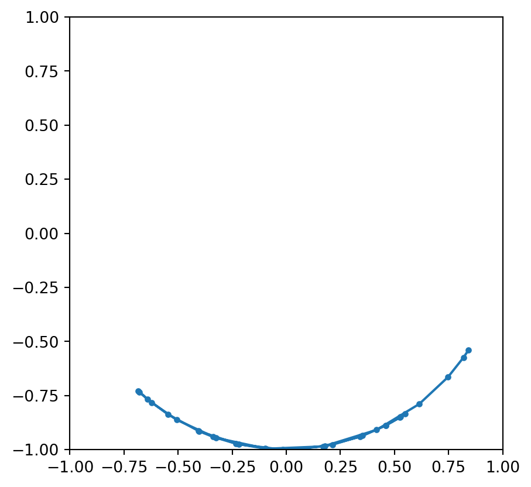
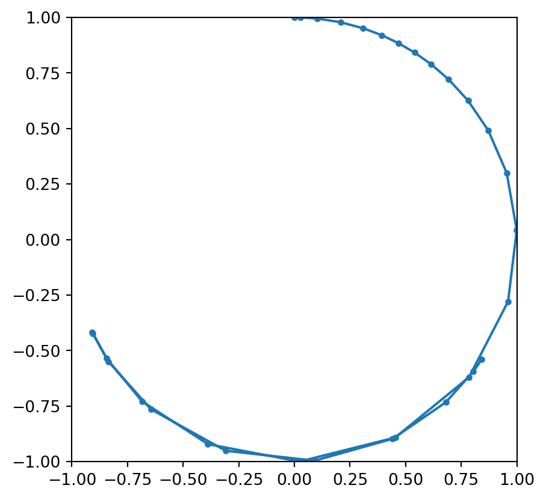
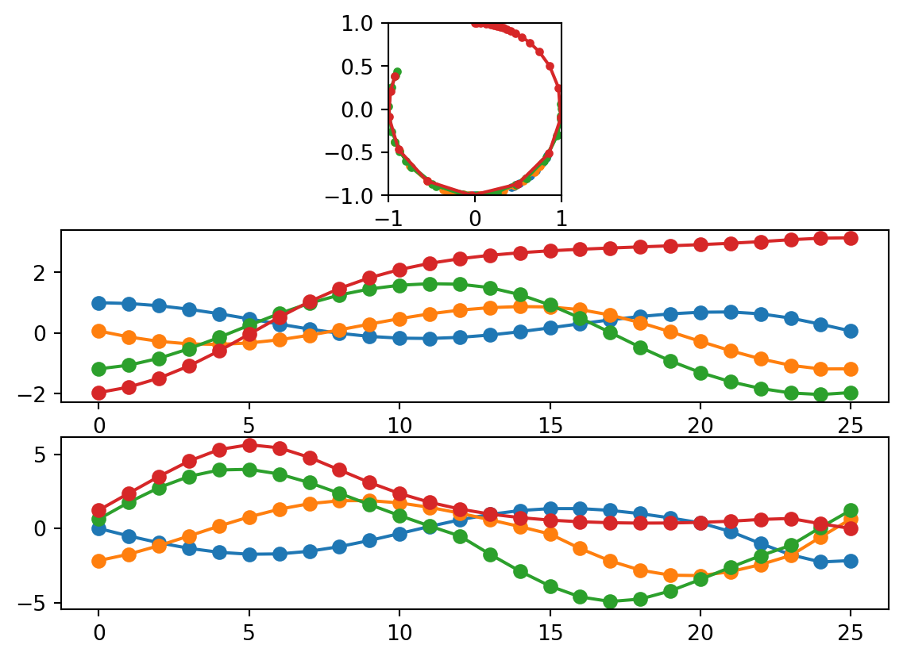
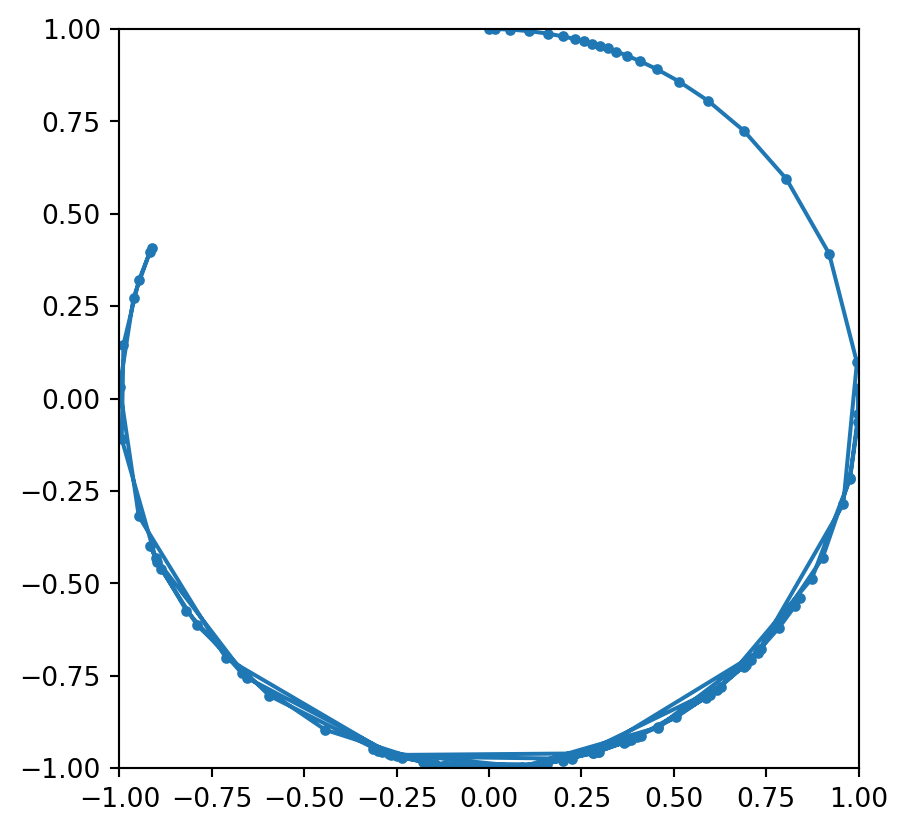
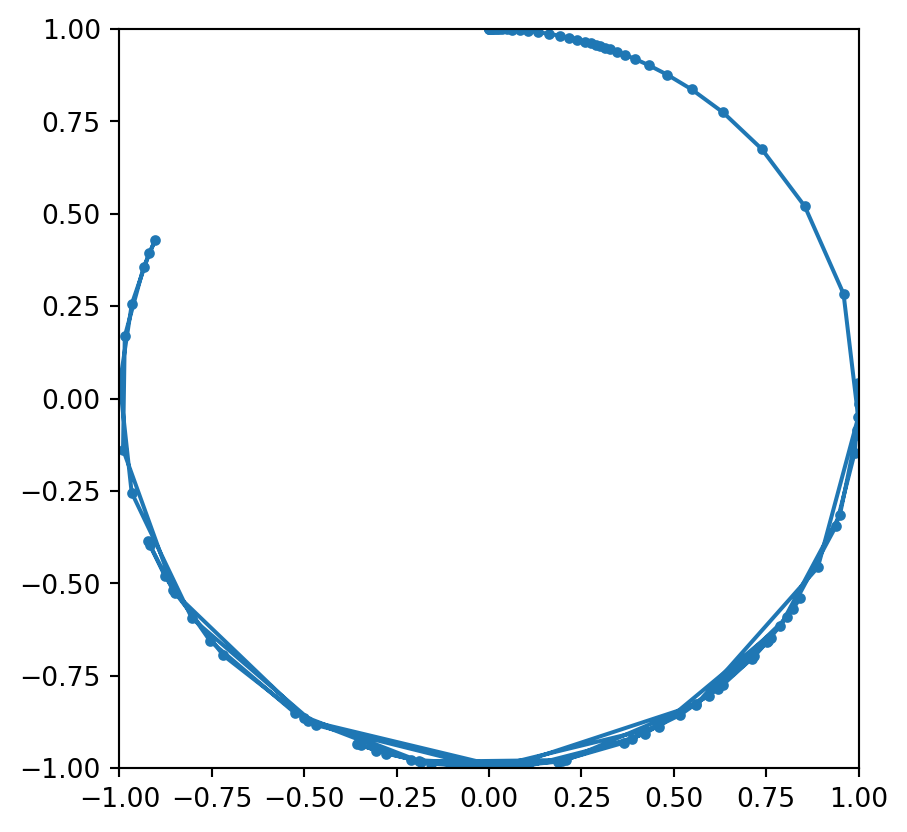
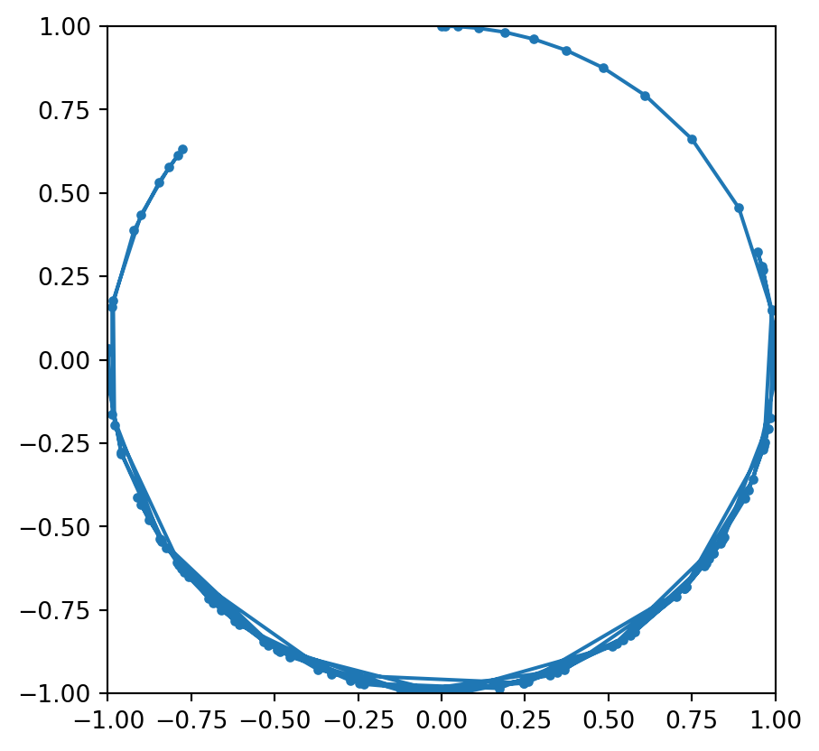

Code
import casadi as ca
import matplotlib.pyplot as plt
import numpy as npThere are many resources online that talk about the qualitative differences between various direct trajectory optimization methods like direct shooting, multiple shooting, collocation, etc. But I haven’t really found a comprehensive collection of simple implementations that highlight the differences. Hopefully this page can be that collection. I’m going to assume that the audience here is already familiar with at least one form of trajectory optimization.
Across all direct methods, a NonLinear Program (NLP) is constructed that discretizes or approximates the continuous time trajectory optimization problem. There are a few consistent components across any formulation of trajectory optimization. 1. The cost function 2. Dynamic constraints 3. Boundary conditions 4. Other constraints
In order to focus in on the methods themselves, we’ll simplify as much of the problem as we can and keep them standardized across implementations. 1. Quadratic, positive definite cost function to maintain convexity. 2. Simple pendulum dynamics. If dynamics are linear, the differences between some methods become irrelevant. 3. Identical initial condition, and fixed final state.
In order to solve the NLP, we’ll employ Sequential Quadratic Programming.
n = 2
m = 1
b = 0.5
m = 1
l = 1
g = 9.81
def continuous_dynamics(state, control):
theta, dtheta = state[0], state[1]
return ca.vertcat(dtheta, -b/m/l**2 * dtheta - g/l*ca.sin(theta) + control/m/l**2)
dt = 0.1
def rk4_integration(state, control):
k1 = continuous_dynamics(state, control)
k2 = continuous_dynamics(state + dt/2*k1, control)
k3 = continuous_dynamics(state + dt/2*k2, control)
k4 = continuous_dynamics(state + dt*k3, control)
return state + dt/6 *(k1 + 2*k2 + 2*k3 + k4)
num_steps = 30
initial_state = [1.0, 0.0]
goal_state = [np.pi, 0.0]
def simulate(initial_state, policy, num_steps, dt, k_0=0):
states = [initial_state]
controls = []
for step in range(num_steps):
control = policy(states[-1], step+k_0)
state = rk4_integration(states[-1], control)
states.append(state)
controls.append(control)
return states, controls
fig, ax = plt.subplots()
def no_control_policy(state, step):
return 0
states, controls = simulate(initial_state, no_control_policy, num_steps, dt)
xs = ca.vcat([l*ca.sin(state[0]) for state in states])
ys = ca.vcat([-l*ca.cos(state[0]) for state in states])
ax.plot(xs, ys, ".-")
ax.set_aspect("equal")
ax.set_ylim([-1, 1])
ax.set_xlim([-1, 1])
print(xs[-1], ys[-1])-0.405928 -0.913905
Start with an initial trajectory. Optimize over an approximation. Your solution will likely not attain your goal point because you linearized around your guess. Solve again until your constraints are satisfied.
num_steps = 30
opti = ca.Opti()
controls = opti.variable(num_steps, m)
state_0 = opti.parameter(n)
state_f = opti.parameter(n)
def open_loop_policy(state, k):
return controls[k]
states, _ = simulate(state_0, open_loop_policy, num_steps, dt)
print("Setting Cost")
Q = np.diag([10., 1.])
R = np.diag([0.1])
cost = 0
for step in range(num_steps):
cost += ca.mtimes([(states[step] - state_f).T, Q, states[step] - state_f]) + ca.mtimes([controls[step], R, controls[step].T])
opti.minimize(cost)
print("Setting Constraints")
opti.subject_to(states[-1] == state_f)
opti.subject_to(opti.bounded(-5.0, controls, 5.0))
print("Setting up problem")
opti.solver("ipopt")
opti.set_value(state_0, initial_state)
opti.set_value(state_f, goal_state)
print("Solving")
sol = opti.solve()Setting Cost
Setting Constraints
Setting up problem
Solving
******************************************************************************
This program contains Ipopt, a library for large-scale nonlinear optimization.
Ipopt is released as open source code under the Eclipse Public License (EPL).
For more information visit https://github.com/coin-or/Ipopt
******************************************************************************
This is Ipopt version 3.14.11, running with linear solver MUMPS 5.4.1.
Number of nonzeros in equality constraint Jacobian...: 60
Number of nonzeros in inequality constraint Jacobian.: 30
Number of nonzeros in Lagrangian Hessian.............: 465
Total number of variables............................: 30
variables with only lower bounds: 0
variables with lower and upper bounds: 0
variables with only upper bounds: 0
Total number of equality constraints.................: 2
Total number of inequality constraints...............: 30
inequality constraints with only lower bounds: 0
inequality constraints with lower and upper bounds: 30
inequality constraints with only upper bounds: 0
iter objective inf_pr inf_du lg(mu) ||d|| lg(rg) alpha_du alpha_pr ls
0 2.9790702e+03 3.56e+00 5.48e+00 -1.0 0.00e+00 - 0.00e+00 0.00e+00 0
1 2.6198183e+03 2.76e+00 4.91e+00 -1.0 2.27e+01 - 1.80e-01 2.18e-01f 1
2 2.5495250e+03 2.54e+00 4.87e+00 -1.0 1.40e+01 - 3.34e-01 7.90e-02f 1
3 2.5398720e+03 1.88e+00 4.53e+00 -1.0 1.46e+01 - 2.58e-01 2.21e-01f 1
4 2.5661375e+03 1.54e+00 8.18e+00 -1.0 1.47e+01 - 3.37e-01 1.65e-01h 1
5 2.6221654e+03 1.29e+00 8.33e+00 -1.0 2.79e+01 - 1.91e-01 1.37e-01h 1
6 2.6309460e+03 1.24e+00 8.57e+00 -1.0 3.30e+01 - 7.66e-02 3.49e-02h 1
7 2.6667893e+03 1.02e+00 7.59e+00 -1.0 4.29e+01 - 1.40e-01 1.32e-01h 1
8 2.6651200e+03 1.01e+00 8.00e+00 -1.0 4.97e+01 - 1.01e-01 8.36e-03f 1
9 2.6745226e+03 8.30e-01 8.50e+00 -1.0 5.50e+01 - 2.46e-02 1.10e-01h 1
iter objective inf_pr inf_du lg(mu) ||d|| lg(rg) alpha_du alpha_pr ls
10 2.6620314e+03 7.99e-01 9.11e+00 -1.0 7.37e+01 - 1.02e-01 3.03e-02f 1
11 2.6577890e+03 7.92e-01 1.38e+01 -1.0 7.18e+01 - 7.06e-02 7.97e-03f 1
12 2.6434148e+03 7.26e-01 1.08e+01 -1.0 7.43e+01 - 1.00e-02 5.24e-02f 1
13 2.6169621e+03 6.40e-01 1.19e+01 -1.0 8.68e+01 - 8.15e-02 6.22e-02f 1
14 2.6164064e+03 6.39e-01 1.25e+01 -1.0 7.49e+01 - 2.32e-02 7.21e-04f 1
15 2.5984190e+03 6.36e-01 1.01e+01 -1.0 9.70e+01 - 5.80e-03 3.30e-02f 1
16 2.5664428e+03 7.71e-01 1.27e+01 -1.0 1.06e+02 - 7.07e-02 5.90e-02f 1
17 2.5657154e+03 7.70e-01 1.27e+01 -1.0 8.50e+01 - 1.15e-02 7.33e-04f 1
18 2.5446713e+03 8.06e-01 1.34e+01 -1.0 1.22e+02 - 3.96e-03 2.85e-02f 1
19 2.5213140e+03 8.50e-01 1.45e+01 -1.0 1.29e+02 - 5.09e-02 2.81e-02f 1
iter objective inf_pr inf_du lg(mu) ||d|| lg(rg) alpha_du alpha_pr ls
20 2.5028161e+03 8.68e-01 1.51e+01 -1.0 1.35e+02 - 1.79e-02 1.82e-02f 1
21 2.5013315e+03 8.67e-01 1.50e+01 -1.0 1.32e+02 - 3.38e-03 1.34e-03f 1
22 2.4704882e+03 1.12e+00 2.34e+01 -1.0 1.51e+02 - 1.69e-02 4.57e-02f 1
23 2.4606893e+03 1.13e+00 2.35e+01 -1.0 1.77e+02 - 2.91e-02 7.38e-03f 1
24 2.4475441e+03 1.14e+00 2.41e+01 -1.0 1.25e+02 - 1.45e-03 1.02e-02f 1
25 2.4461278e+03 1.14e+00 2.50e+01 -1.0 1.82e+02 - 1.88e-02 1.03e-03f 1
26 2.4175500e+03 1.85e+00 5.43e+01 -1.0 1.77e+02 - 6.30e-03 5.09e-02f 1
27 2.4168149e+03 1.85e+00 5.43e+01 -1.0 2.37e+02 - 7.33e-03 3.82e-04f 1
28 2.4042145e+03 1.87e+00 5.48e+01 -1.0 2.57e+02 - 2.76e-04 7.80e-03f 1
29 2.3866451e+03 1.93e+00 5.69e+01 -1.0 2.60e+02 - 1.81e-02 1.20e-02f 1
iter objective inf_pr inf_du lg(mu) ||d|| lg(rg) alpha_du alpha_pr ls
30 2.3790264e+03 1.93e+00 5.71e+01 -1.0 1.97e+02 - 1.35e-03 4.53e-03f 1
31 2.3774955e+03 1.93e+00 5.70e+01 -1.0 2.10e+02 - 3.81e-03 7.93e-04f 1
32 2.3508340e+03 2.24e+00 7.33e+01 -1.0 2.37e+02 - 5.20e-03 2.13e-02f 1
33 2.3497042e+03 2.24e+00 6.62e+01 -1.0 2.58e+02 - 1.31e-02 5.22e-04f 1
34 2.3298805e+03 2.45e+00 6.26e+01 -1.0 3.14e+02 - 1.04e-02 1.45e-02f 1
35 2.3267759e+03 2.45e+00 6.24e+01 -1.0 3.11e+02 - 3.22e-03 1.37e-03f 1
36 2.3104124e+03 2.54e+00 5.61e+01 -1.0 3.08e+02 - 1.10e-02 8.81e-03f 1
37 2.3095882e+03 2.54e+00 5.60e+01 -1.0 3.50e+02 - 1.96e-04 3.36e-04f 1
38 2.2915984e+03 3.04e+00 7.49e+01 -1.0 3.76e+02 - 1.36e-02 1.64e-02f 1
39 2.2844872e+03 3.05e+00 8.10e+01 -1.0 3.65e+02 - 1.85e-03 2.85e-03f 1
iter objective inf_pr inf_du lg(mu) ||d|| lg(rg) alpha_du alpha_pr ls
40 2.2689359e+03 3.21e+00 1.39e+02 -1.0 3.80e+02 - 1.31e-02 7.97e-03f 1
41 2.2686484e+03 3.21e+00 1.39e+02 -1.0 6.62e+02 - 6.73e-04 1.09e-04h 1
42 2.2682478e+03 3.21e+00 1.39e+02 -1.0 1.56e+03 - 2.56e-04 1.95e-04f 1
43 2.2659942e+03 3.21e+00 1.39e+02 -1.0 1.19e+03 - 2.78e-05 1.10e-03f 1
44 2.2636735e+03 3.24e+00 1.52e+02 -1.0 1.12e+03 - 1.59e-03 6.97e-03f 1
45 2.2636534e+03 3.24e+00 1.52e+02 -1.0 5.42e+02 - 1.25e-03 1.45e-05h 1
46 2.2610889e+03 3.24e+00 1.53e+02 -1.0 5.87e+02 - 1.48e-05 8.96e-04f 1
47 2.2447273e+03 3.60e+00 1.78e+02 -1.0 5.50e+02 - 5.87e-03 8.40e-03f 1
48 2.2431253e+03 3.61e+00 2.82e+02 -1.0 2.38e+02 - 1.51e-04 5.13e-03f 1
49 2.2587676e+03 3.59e+00 2.90e+02 -1.0 2.15e+02 - 2.15e-03 7.60e-03h 3
iter objective inf_pr inf_du lg(mu) ||d|| lg(rg) alpha_du alpha_pr ls
50 2.2643642e+03 3.58e+00 2.86e+02 -1.0 1.60e+02 - 5.14e-03 3.09e-03h 5
51 2.2654158e+03 3.57e+00 2.84e+02 -1.0 1.53e+02 - 3.08e-03 9.61e-04h 7
52 2.2664319e+03 3.57e+00 2.76e+02 -1.0 1.49e+02 - 1.08e-02 9.84e-04h 7
53 2.2372462e+03 2.93e+00 2.39e+02 -1.0 1.82e+01 - 1.20e-03 1.81e-01f 1
54 2.2345003e+03 2.88e+00 2.36e+02 -1.0 1.63e+01 - 2.54e-01 1.50e-02f 1
55 2.2052078e+03 2.35e+00 1.92e+02 -1.0 1.59e+01 - 2.73e-01 1.86e-01f 1
56 2.1995475e+03 2.19e+00 1.79e+02 -1.0 9.86e+00 - 7.91e-02 6.82e-02f 1
57 2.1922768e+03 1.98e+00 1.61e+02 -1.0 8.01e+00 - 1.82e-01 1.01e-01f 1
58 2.1804598e+03 1.55e+00 1.23e+02 -1.0 8.58e+00 - 2.32e-01 2.33e-01f 1
59 2.1773541e+03 1.39e+00 1.11e+02 -1.0 5.67e+00 - 2.12e-01 1.01e-01f 1
iter objective inf_pr inf_du lg(mu) ||d|| lg(rg) alpha_du alpha_pr ls
60 2.1725179e+03 9.80e-01 7.78e+01 -1.0 4.86e+00 - 1.00e+00 2.97e-01f 1
61 2.1687961e+03 4.44e-01 3.52e+01 -1.0 4.54e+00 - 5.60e-01 5.47e-01f 1
62 2.1674408e+03 7.78e-05 8.32e-01 -1.0 1.86e+00 - 1.00e+00 1.00e+00f 1
63 2.1653279e+03 3.00e-04 4.95e-03 -1.7 2.59e-01 - 1.00e+00 1.00e+00f 1
64 2.1648415e+03 1.96e-05 2.14e-04 -2.5 1.83e-01 - 1.00e+00 1.00e+00f 1
65 2.1647656e+03 1.36e-06 1.03e-05 -3.8 1.03e-01 - 1.00e+00 1.00e+00f 1
66 2.1647643e+03 1.93e-07 7.90e-07 -3.8 4.94e-02 - 1.00e+00 1.00e+00h 1
67 2.1647601e+03 5.90e-08 2.72e-07 -5.7 2.67e-02 - 1.00e+00 1.00e+00f 1
68 2.1647600e+03 1.11e-08 4.40e-08 -5.7 1.19e-02 - 1.00e+00 1.00e+00h 1
69 2.1647599e+03 1.21e-09 4.80e-09 -5.7 3.93e-03 - 1.00e+00 1.00e+00h 1
iter objective inf_pr inf_du lg(mu) ||d|| lg(rg) alpha_du alpha_pr ls
70 2.1647599e+03 5.19e-11 2.18e-10 -8.6 8.06e-04 - 1.00e+00 1.00e+00h 1
71 2.1647599e+03 4.97e-14 1.53e-13 -8.6 2.45e-05 - 1.00e+00 1.00e+00h 1
Number of Iterations....: 71
(scaled) (unscaled)
Objective...............: 2.1647598892929841e+03 2.1647598892929841e+03
Dual infeasibility......: 1.5276668818842154e-13 1.5276668818842154e-13
Constraint violation....: 4.9737991503207013e-14 4.9737991503207013e-14
Variable bound violation: 0.0000000000000000e+00 0.0000000000000000e+00
Complementarity.........: 2.6588239911284211e-09 2.6588239911284211e-09
Overall NLP error.......: 2.6588239911284211e-09 2.6588239911284211e-09
Number of objective function evaluations = 90
Number of objective gradient evaluations = 72
Number of equality constraint evaluations = 90
Number of inequality constraint evaluations = 90
Number of equality constraint Jacobian evaluations = 72
Number of inequality constraint Jacobian evaluations = 72
Number of Lagrangian Hessian evaluations = 71
Total seconds in IPOPT = 0.395
EXIT: Optimal Solution Found.
solver : t_proc (avg) t_wall (avg) n_eval
nlp_f | 4.25ms ( 47.18us) 4.26ms ( 47.37us) 90
nlp_g | 6.32ms ( 70.22us) 6.27ms ( 69.62us) 90
nlp_grad_f | 6.96ms ( 95.33us) 6.95ms ( 95.23us) 73
nlp_hess_l | 334.99ms ( 4.72ms) 335.35ms ( 4.72ms) 71
nlp_jac_g | 12.09ms (165.66us) 12.14ms (166.34us) 73
total | 396.10ms (396.10ms) 395.78ms (395.78ms) 1state_traj = np.array([sol.value(state) for state in states])
print("Cost", sol.value(cost))
fig, ax = plt.subplots()
# states, controls = simulate(initial_state, no_control_policy, num_steps, dt)
xs = np.sin(state_traj[:, 0]) * l
ys = -np.cos(state_traj[:, 0]) * l
ax.plot(xs, ys, ".-")
ax.set_aspect("equal")
ax.set_ylim([-1, 1])
ax.set_xlim([-1, 1])
print(xs[-1], ys[-1])Cost 2164.759889292984
-1.4976568454987394e-14 1.0
opti = ca.Opti()
num_steps = 100
num_knots = 5 # The number of knot points, including the beginning and end of the trajectory
knot_segment_lengths = [num_steps // (num_knots-1)] * (num_knots - 2)
knot_segment_lengths.append(num_steps - sum(knot_segment_lengths))
controls = opti.variable(num_steps, m)
state_knots = opti.variable(num_knots, n)
state_0 = opti.parameter(n)
state_f = opti.parameter(n)
def open_loop_policy(state, k):
return controls[k, :]
cost = 0
Q = np.diag([10., 1.])
R = np.diag([0.1])
states = []
k_0 = 0
for idx, segment_length in enumerate(knot_segment_lengths):
segment_states, segment_controls = simulate(state_knots[idx, :].T, open_loop_policy, segment_length, dt, k_0)
states.append(segment_states)
for state, control in zip(segment_states[:-1], segment_controls):
cost += (ca.mtimes([(state - state_f).T, Q, state - state_f])
+ ca.mtimes([control, R, control.T]))
opti.subject_to(segment_states[-1] == state_knots[idx+1, :].T)
k_0 += segment_length
opti.minimize(cost)
print("Setting Constraints")
opti.subject_to(state_knots[-1, :].T == state_f)
opti.subject_to(state_knots[0, :].T == state_0)
opti.subject_to(opti.bounded(-3.0, controls, 3.0))
print("Setting up problem")
opti.solver("ipopt")
opti.set_value(state_0, initial_state)
opti.set_value(state_f, goal_state)
print("Solving")
sol = opti.solve()Setting Constraints
Setting up problem
Solving
This is Ipopt version 3.14.11, running with linear solver MUMPS 5.4.1.
Number of nonzeros in equality constraint Jacobian...: 228
Number of nonzeros in inequality constraint Jacobian.: 100
Number of nonzeros in Lagrangian Hessian.............: 1512
Total number of variables............................: 110
variables with only lower bounds: 0
variables with lower and upper bounds: 0
variables with only upper bounds: 0
Total number of equality constraints.................: 12
Total number of inequality constraints...............: 100
inequality constraints with only lower bounds: 0
inequality constraints with lower and upper bounds: 100
inequality constraints with only upper bounds: 0
iter objective inf_pr inf_du lg(mu) ||d|| lg(rg) alpha_du alpha_pr ls
0 9.8696044e+03 3.14e+00 2.33e+00 -1.0 0.00e+00 - 0.00e+00 0.00e+00 0
1 9.3913818e+03 2.61e+00 6.86e+00 -1.0 1.76e+01 - 1.45e-01 1.69e-01f 1
2 9.2503096e+03 2.43e+00 8.70e+00 -1.0 1.16e+01 - 2.86e-01 6.76e-02f 1
3 9.1139534e+03 1.99e+00 2.89e+01 -1.0 1.27e+01 - 2.20e-01 1.84e-01f 1
4 9.1477317e+03 1.82e+00 3.46e+01 -1.0 2.56e+01 - 1.30e-01 8.48e-02h 1
5 9.1969521e+03 1.71e+00 3.67e+01 -1.0 4.04e+01 - 8.33e-02 5.89e-02h 1
6 9.2545099e+03 1.61e+00 3.60e+01 -1.0 3.24e+01 - 5.63e-02 5.57e-02h 1
7 9.2960345e+03 1.56e+00 3.43e+01 -1.0 6.21e+01 - 7.47e-02 3.59e-02h 1
8 9.3206072e+03 1.52e+00 3.24e+01 -1.0 3.24e+01 - 4.93e-02 2.17e-02h 1
9 9.4374338e+03 1.41e+00 2.22e+01 -1.0 6.37e+01 - 2.32e-02 7.25e-02h 1
iter objective inf_pr inf_du lg(mu) ||d|| lg(rg) alpha_du alpha_pr ls
10 9.4424911e+03 1.40e+00 2.20e+01 -1.0 5.23e+01 - 4.43e-02 5.55e-03h 1
11 9.5111756e+03 1.33e+00 2.66e+01 -1.0 5.78e+01 - 6.75e-02 5.60e-02h 1
12 9.5155785e+03 1.32e+00 2.66e+01 -1.0 7.91e+01 - 2.93e-02 4.22e-03h 1
13 9.6242666e+03 1.24e+00 3.28e+01 -1.0 8.59e+01 - 8.53e-03 6.15e-02h 1
14 9.6256494e+03 1.24e+00 3.27e+01 -1.0 5.08e+01 - 3.33e-02 1.56e-03h 1
15 9.6727202e+03 1.19e+00 3.46e+01 -1.0 9.07e+01 - 2.28e-02 3.65e-02h 1
16 9.6847737e+03 1.18e+00 3.45e+01 -1.0 7.30e+01 - 2.59e-02 1.16e-02h 1
17 9.7172409e+03 1.15e+00 3.50e+01 -1.0 6.00e+01 - 4.45e-03 2.23e-02h 1
18 9.8028298e+03 1.09e+00 4.45e+01 -1.0 5.98e+01 - 2.32e-02 5.38e-02h 1
19 9.8196813e+03 1.07e+00 4.55e+01 -1.0 7.40e+01 - 7.55e-02 1.58e-02h 1
iter objective inf_pr inf_du lg(mu) ||d|| lg(rg) alpha_du alpha_pr ls
20 9.8433360e+03 1.05e+00 4.81e+01 -1.0 5.99e+01 - 6.26e-02 2.38e-02h 1
21 9.8487907e+03 1.04e+00 4.81e+01 -1.0 7.66e+01 - 2.01e-02 8.27e-03h 1
22 9.8569764e+03 1.03e+00 4.93e+01 -1.0 1.18e+02 - 5.52e-02 1.32e-02h 1
23 9.8725131e+03 1.00e+00 5.27e+01 -1.0 9.86e+01 - 3.12e-02 2.03e-02h 1
24 9.9649982e+03 9.49e-01 8.91e+01 -1.0 1.02e+02 - 2.96e-03 5.53e-02h 1
25 9.9656002e+03 9.48e-01 8.91e+01 -1.0 7.60e+01 - 1.93e-02 7.45e-04h 1
26 9.9913638e+03 9.25e-01 9.19e+01 -1.0 6.85e+01 - 9.30e-04 2.41e-02h 1
27 1.0037322e+04 8.84e-01 1.04e+02 -1.0 7.45e+01 - 2.47e-02 4.42e-02h 1
28 1.0037765e+04 8.80e-01 1.03e+02 -1.0 1.01e+02 - 4.35e-02 4.45e-03h 1
29 1.0043351e+04 8.62e-01 1.04e+02 -1.0 9.33e+01 - 5.61e-02 2.04e-02h 1
iter objective inf_pr inf_du lg(mu) ||d|| lg(rg) alpha_du alpha_pr ls
30 1.0043597e+04 8.61e-01 1.04e+02 -1.0 1.26e+02 - 6.04e-03 1.88e-03h 1
31 1.0049761e+04 8.47e-01 1.04e+02 -1.0 1.43e+02 - 2.28e-02 1.55e-02h 1
32 1.0119443e+04 7.95e-01 1.51e+02 -1.0 9.20e+01 - 2.91e-03 6.18e-02h 1
33 1.0119632e+04 7.94e-01 1.51e+02 -1.0 6.99e+01 - 3.08e-02 8.14e-04h 1
34 1.0120085e+04 7.79e-01 1.53e+02 -1.0 1.37e+02 - 2.58e-03 1.93e-02h 1
35 1.0117147e+04 7.70e-01 1.53e+02 -1.0 1.72e+02 - 2.83e-02 1.09e-02f 1
36 1.0117671e+04 7.63e-01 1.53e+02 -1.0 1.10e+02 - 9.13e-04 1.03e-02h 1
37 1.0119143e+04 7.60e-01 1.52e+02 -1.0 9.60e+01 - 2.73e-02 3.61e-03h 1
38 1.0137717e+04 7.41e-01 1.54e+02 -1.0 1.06e+02 - 6.30e-03 2.51e-02h 2
39 1.0152521e+04 7.21e-01 1.57e+02 -1.0 1.01e+02 - 6.77e-02 2.67e-02h 1
iter objective inf_pr inf_du lg(mu) ||d|| lg(rg) alpha_du alpha_pr ls
40 1.0154284e+04 7.16e-01 1.56e+02 -1.0 7.37e+01 - 8.58e-03 7.31e-03h 1
41 1.0157968e+04 7.06e-01 1.56e+02 -1.0 5.40e+01 - 5.88e-03 1.32e-02h 1
42 1.0158191e+04 7.03e-01 1.55e+02 -1.0 7.35e+01 - 4.30e-02 4.03e-03h 1
43 1.0181119e+04 6.61e-01 1.98e+02 -1.0 7.65e+01 - 2.10e-02 6.00e-02h 1
44 1.0179219e+04 6.60e-01 1.97e+02 -1.0 1.28e+02 - 7.41e-02 2.49e-03f 1
45 1.0173508e+04 6.44e-01 1.99e+02 -1.0 1.26e+02 - 1.06e-03 2.31e-02f 1
46 1.0174934e+04 6.41e-01 1.99e+02 -1.0 8.82e+01 - 1.22e-02 5.15e-03h 1
47 1.0184285e+04 6.28e-01 1.99e+02 -1.0 1.18e+02 - 1.49e-02 2.01e-02h 2
48 1.0191370e+04 6.15e-01 1.99e+02 -1.0 1.10e+02 - 5.45e-02 2.17e-02h 1
49 1.0191298e+04 6.11e-01 1.98e+02 -1.0 9.68e+01 - 5.57e-03 5.18e-03h 1
iter objective inf_pr inf_du lg(mu) ||d|| lg(rg) alpha_du alpha_pr ls
50 1.0188530e+04 6.00e-01 1.98e+02 -1.0 9.41e+01 - 1.07e-03 1.81e-02f 1
51 1.0187486e+04 6.00e-01 1.98e+02 -1.0 1.31e+02 - 3.85e-02 1.10e-03f 1
52 1.0178808e+04 5.72e-01 2.17e+02 -1.0 6.34e+01 - 3.48e-03 4.54e-02f 2
53 1.0166920e+04 5.49e-01 2.37e+02 -1.0 6.99e+01 - 9.54e-02 4.16e-02f 1
54 1.0163741e+04 5.47e-01 2.36e+02 -1.0 1.11e+02 - 9.27e-04 2.84e-03f 1
55 1.0162456e+04 5.46e-01 2.36e+02 -1.0 8.70e+01 - 2.58e-02 2.91e-03f 1
56 1.0164642e+04 5.41e-01 2.34e+02 -1.0 9.45e+01 - 3.31e-03 1.40e-02h 2
57 1.0166443e+04 5.36e-01 2.33e+02 -1.0 1.08e+02 - 1.03e-02 1.46e-02h 2
58 1.0170544e+04 5.33e-01 2.34e+02 -1.0 1.25e+02 - 4.40e-02 2.61e-02h 1
59 1.0169246e+04 5.32e-01 2.33e+02 -1.0 1.23e+02 - 8.27e-03 2.50e-03f 1
iter objective inf_pr inf_du lg(mu) ||d|| lg(rg) alpha_du alpha_pr ls
60 1.0163892e+04 5.30e-01 2.32e+02 -1.0 9.73e+01 - 5.84e-04 6.58e-03f 1
61 1.0159998e+04 5.28e-01 2.32e+02 -1.0 1.35e+02 - 4.18e-02 2.53e-03f 1
62 1.0139384e+04 5.84e-01 2.57e+02 -1.0 6.06e+01 - 2.37e-03 4.80e-02f 2
63 1.0122155e+04 6.41e-01 2.74e+02 -1.0 7.43e+01 - 3.98e-02 3.95e-02f 1
64 1.0116493e+04 6.29e-01 2.69e+02 -1.0 5.93e+01 - 3.13e-03 2.48e-02f 1
65 1.0115294e+04 6.24e-01 2.67e+02 -1.0 4.75e+01 - 8.36e-02 8.95e-03f 1
66 1.0130849e+04 5.98e-01 2.57e+02 -1.0 3.08e+01 - 3.64e-02 4.11e-02h 1
67 1.0144348e+04 5.74e-01 2.47e+02 -1.0 3.29e+01 - 1.48e-02 4.35e-02h 1
68 1.0133964e+04 5.79e-01 2.50e+02 -1.0 4.13e+02 -2.0 2.60e-03 5.06e-03f 1
69 1.0113557e+04 5.95e-01 2.57e+02 -1.0 6.21e+03 -1.6 5.22e-04 4.55e-04f 1
iter objective inf_pr inf_du lg(mu) ||d|| lg(rg) alpha_du alpha_pr ls
70 1.0115822e+04 5.89e-01 2.55e+02 -1.0 3.61e+01 - 3.82e-02 9.67e-03h 1
71 1.0113568e+04 5.86e-01 2.53e+02 -1.0 4.91e+01 - 2.21e-03 6.17e-03f 1
72 1.0107840e+04 5.70e-01 2.38e+02 -1.0 4.58e+01 - 1.88e-01 1.04e-01f 1
73 1.0101268e+04 5.59e-01 2.33e+02 -1.0 3.33e+01 - 7.20e-02 2.51e-02f 1
74 1.0100341e+04 5.60e-01 2.23e+02 -1.0 2.86e+01 - 2.27e-02 7.96e-02f 1
75 1.0099826e+04 5.40e-01 2.14e+02 -1.0 1.63e+01 - 7.01e-02 4.62e-02f 1
76 1.0097796e+04 5.49e-01 2.01e+02 -1.0 2.72e+01 - 7.12e-02 9.06e-02f 1
77 1.0098457e+04 5.46e-01 2.00e+02 -1.0 1.52e+01 - 7.58e-02 4.55e-03h 1
78 1.0113856e+04 5.02e-01 1.84e+02 -1.0 2.32e+01 - 1.80e-02 8.24e-02h 1
79 1.0108788e+04 4.98e-01 1.82e+02 -1.0 9.70e+01 - 4.05e-03 1.10e-02f 1
iter objective inf_pr inf_du lg(mu) ||d|| lg(rg) alpha_du alpha_pr ls
80 1.0098162e+04 5.00e-01 1.78e+02 -1.0 1.06e+02 - 2.72e-03 3.55e-02f 1
81 1.0098162e+04 4.99e-01 1.78e+02 -1.0 3.26e+01 - 6.92e-02 1.49e-03h 1
82 1.0080441e+04 4.96e-01 1.75e+02 -1.0 8.45e+01 - 1.39e-03 2.09e-02f 1
83 1.0060385e+04 4.95e-01 1.73e+02 -1.0 1.07e+02 - 2.35e-03 1.70e-02f 1
84 1.0059404e+04 4.95e-01 1.72e+02 -1.0 4.73e+01 - 1.62e-01 1.93e-03f 1
85 1.0056175e+04 4.93e-01 1.71e+02 -1.0 5.12e+01 - 3.74e-02 4.07e-03f 1
86 1.0038469e+04 4.87e-01 1.61e+02 -1.0 3.83e+01 - 9.57e-04 5.46e-02f 1
87 1.0040711e+04 4.71e-01 1.56e+02 -1.0 2.10e+01 - 2.99e-02 3.63e-02h 1
88 1.0037192e+04 4.82e-01 1.35e+02 -1.0 2.27e+01 - 2.04e-01 9.42e-02f 2
89 1.0025577e+04 5.57e-01 1.15e+02 -1.0 3.47e+01 - 2.08e-03 9.10e-02f 1
iter objective inf_pr inf_du lg(mu) ||d|| lg(rg) alpha_du alpha_pr ls
90 1.0025025e+04 5.56e-01 1.14e+02 -1.0 3.62e+01 - 4.75e-02 1.86e-03h 1
91 1.0011794e+04 5.67e-01 1.19e+02 -1.0 1.25e+02 - 2.80e-03 2.39e-02f 1
92 1.0007359e+04 5.65e-01 1.19e+02 -1.0 1.55e+02 -2.1 1.99e-02 4.84e-03f 1
93 9.9935524e+03 5.30e-01 1.11e+02 -1.0 2.18e+01 -0.7 8.71e-03 9.60e-02f 1
94 9.9902004e+03 5.30e-01 1.11e+02 -1.0 2.08e+02 -1.2 2.06e-02 9.30e-04f 1
95 9.9786698e+03 5.25e-01 1.10e+02 -1.0 5.68e+01 - 9.50e-02 1.52e-02f 1
96 9.9577093e+03 4.95e-01 1.05e+02 -1.0 2.77e+01 - 1.73e-01 9.81e-02f 1
97 9.9561287e+03 4.76e-01 1.01e+02 -1.0 1.72e+01 - 5.27e-02 4.10e-02f 1
98 9.9433502e+03 5.36e-01 1.53e+02 -1.0 1.79e+01 - 3.34e-01 3.73e-01F 1
99 9.9422167e+03 5.33e-01 1.52e+02 -1.0 1.22e+01 - 6.33e-03 5.93e-03f 1
iter objective inf_pr inf_du lg(mu) ||d|| lg(rg) alpha_du alpha_pr ls
100 9.9392171e+03 5.14e-01 1.47e+02 -1.0 2.83e+01 - 2.23e-02 3.85e-02f 1
101 9.9334166e+03 5.08e-01 1.45e+02 -1.0 7.13e+01 - 1.41e-02 1.80e-02f 1
102 9.9250577e+03 5.01e-01 1.42e+02 -1.0 7.79e+01 - 2.75e-02 2.78e-02f 1
103 9.9231156e+03 4.96e-01 1.41e+02 -1.0 1.88e+01 -0.8 6.53e-02 1.03e-02f 1
104 9.9100307e+03 4.92e-01 1.40e+02 -1.0 6.43e+01 - 4.47e-03 2.04e-02f 1
105 9.8999205e+03 4.87e-01 1.39e+02 -1.0 6.56e+01 -1.3 3.27e-02 1.54e-02f 1
106 9.8738955e+03 5.02e-01 1.42e+02 -1.0 1.59e+02 - 2.44e-03 1.66e-02f 1
107 9.8706297e+03 5.02e-01 1.42e+02 -1.0 1.23e+02 -1.7 2.49e-02 1.70e-03f 1
108 9.8648205e+03 4.84e-01 1.37e+02 -1.0 1.39e+01 - 9.53e-02 3.74e-02f 1
109 9.8638709e+03 4.82e-01 1.36e+02 -1.0 2.01e+01 - 3.63e-02 3.64e-03f 1
iter objective inf_pr inf_du lg(mu) ||d|| lg(rg) alpha_du alpha_pr ls
110 9.8484254e+03 4.78e-01 1.34e+02 -1.0 2.74e+01 - 7.15e-03 3.82e-02f 1
111 9.8313171e+03 4.57e-01 1.24e+02 -1.0 1.20e+01 - 3.87e-01 1.20e-01f 1
112 9.8000487e+03 5.30e-01 1.36e+02 -1.0 1.94e+01 - 1.14e-01 1.76e-01f 1
113 9.7994905e+03 5.26e-01 1.35e+02 -1.0 1.03e+01 - 9.74e-02 7.24e-03h 1
114 9.7830456e+03 4.78e-01 1.23e+02 -1.0 2.24e+01 - 2.80e-02 1.49e-01f 1
115 9.7821573e+03 3.91e-01 9.94e+01 -1.0 5.04e+00 -0.4 2.78e-01 1.83e-01h 1
116 9.7659180e+03 3.83e-01 9.88e+01 -1.0 2.52e+01 -0.9 1.80e-02 7.14e-02f 1
117 9.7672697e+03 2.79e-01 7.14e+01 -1.0 5.09e+00 -0.4 2.53e-01 2.71e-01h 1
118 9.7837257e+03 2.85e-02 1.55e+01 -1.0 2.96e+00 -0.0 2.17e-01 1.00e+00h 1
119 9.7717822e+03 2.01e-02 5.88e+00 -1.0 9.99e-01 0.4 5.71e-01 6.47e-01f 1
iter objective inf_pr inf_du lg(mu) ||d|| lg(rg) alpha_du alpha_pr ls
120 9.7456966e+03 1.41e-01 5.33e+01 -1.0 5.81e+00 -0.1 3.51e-01 3.88e-01f 1
121 9.7436844e+03 1.35e-01 5.11e+01 -1.0 1.43e+00 0.4 8.31e-01 4.29e-02f 1
122 9.7109153e+03 2.20e-01 7.40e+01 -1.0 8.22e+00 -0.1 1.34e-01 2.94e-01f 1
123 9.7099820e+03 2.19e-01 7.39e+01 -1.0 1.99e+01 -0.6 6.75e-02 2.10e-03f 1
124 9.6690390e+03 3.11e-01 1.31e+02 -1.0 1.13e+01 -1.1 1.20e-01 2.78e-01f 1
125 9.6409318e+03 1.08e-01 4.30e+01 -1.0 1.08e+00 0.2 9.67e-01 6.87e-01f 1
126 9.6237580e+03 1.29e-01 4.16e+01 -1.0 3.74e+00 -0.2 2.88e-01 5.36e-01f 1
127 9.6105171e+03 6.66e-02 2.06e+01 -1.0 1.35e+00 0.2 1.00e+00 5.23e-01f 1
128 9.5754050e+03 2.06e-01 4.24e+01 -1.0 6.42e+00 -0.3 2.74e-01 5.54e-01f 1
129 9.5741007e+03 2.01e-01 4.14e+01 -1.0 1.53e+00 0.1 4.53e-01 2.33e-02f 1
iter objective inf_pr inf_du lg(mu) ||d|| lg(rg) alpha_du alpha_pr ls
130 9.5627954e+03 3.72e-01 9.31e+01 -1.0 4.60e+02 - 1.82e-04 7.30e-03f 1
131 9.5405660e+03 2.58e-01 6.61e+01 -1.0 3.00e+00 -0.3 5.22e-01 3.42e-01f 1
132 9.5248480e+03 1.45e-01 3.63e+01 -1.0 1.35e+00 0.1 1.00e+00 4.98e-01f 1
133 9.5205643e+03 1.41e-01 3.51e+01 -1.0 7.16e+00 -0.4 1.44e-01 7.35e-02f 1
134 9.5058136e+03 9.02e-02 1.96e+01 -1.0 1.64e+00 0.0 1.00e+00 7.02e-01f 1
135 9.4979756e+03 9.18e-02 1.95e+01 -1.0 8.41e+00 -0.4 2.20e-01 9.86e-02f 1
136 9.4714230e+03 9.92e-02 1.69e+01 -1.0 2.38e+00 -0.0 1.00e+00 1.00e+00f 1
137 9.4584988e+03 5.33e-02 9.40e+00 -1.0 1.12e+00 0.4 1.00e+00 5.64e-01f 1
138 9.4550945e+03 5.41e-02 9.74e+00 -1.0 3.28e+01 - 4.82e-02 1.46e-02f 1
139 9.4390008e+03 2.15e-01 5.43e+01 -1.0 1.06e+02 - 3.40e-03 3.44e-02f 1
iter objective inf_pr inf_du lg(mu) ||d|| lg(rg) alpha_du alpha_pr ls
140 9.4326677e+03 1.36e-01 3.43e+01 -1.0 1.01e+00 -0.1 1.00e+00 3.70e-01f 1
141 9.4277764e+03 1.82e-01 4.24e+01 -1.0 4.65e+00 -0.5 4.04e-02 4.35e-01f 1
142 9.4225067e+03 1.56e-01 3.59e+01 -1.0 2.32e+00 -0.1 8.50e-01 1.98e-01f 1
143 9.4106934e+03 1.72e-02 2.96e+00 -1.0 6.01e-01 0.3 1.00e+00 1.00e+00f 1
144 9.3997135e+03 9.73e-02 2.02e+01 -1.0 5.67e+00 -0.2 3.93e-01 2.22e-01f 1
145 9.3854400e+03 2.09e-02 3.03e+00 -1.0 1.08e+00 0.3 1.00e+00 1.00e+00f 1
146 9.3695546e+03 8.39e-02 1.61e+01 -1.0 6.43e+00 -0.2 2.86e-01 2.42e-01f 1
147 9.3686608e+03 8.40e-02 1.62e+01 -1.0 2.44e+02 - 5.83e-03 5.76e-04f 1
148 9.3541642e+03 1.68e-01 4.23e+01 -1.0 3.72e+01 - 7.54e-02 8.77e-02f 1
149 9.3467620e+03 1.60e-01 4.10e+01 -1.0 4.34e+00 -0.7 4.10e-01 3.23e-01f 1
iter objective inf_pr inf_du lg(mu) ||d|| lg(rg) alpha_du alpha_pr ls
150 9.3426849e+03 5.69e-02 1.35e+01 -1.0 9.78e-01 -0.3 8.24e-01 7.47e-01f 1
151 9.3389952e+03 3.30e-03 8.05e-01 -1.0 2.99e-01 0.2 1.00e+00 1.00e+00f 1
152 9.3304904e+03 1.11e-01 2.79e+01 -1.7 2.68e+00 -0.3 3.08e-01 5.60e-01f 1
153 9.3154811e+03 5.69e-02 1.44e+01 -1.7 9.94e-01 0.1 9.16e-01 1.00e+00f 1
154 9.3090476e+03 1.28e-02 3.02e+00 -1.7 4.39e-01 0.5 1.00e+00 1.00e+00f 1
155 9.2973165e+03 1.14e-01 3.02e+01 -1.7 2.35e+00 0.1 3.65e-01 5.12e-01f 1
156 9.2968890e+03 1.14e-01 3.02e+01 -1.7 4.88e+02 -0.4 2.01e-03 7.46e-05f 1
157 9.2813279e+03 1.13e-01 2.80e+01 -1.7 2.54e+00 0.0 7.04e-01 5.89e-01f 1
158 9.2810460e+03 1.12e-01 2.79e+01 -1.7 3.83e+00 -0.5 2.12e-01 4.83e-03f 1
159 9.2694548e+03 1.62e-01 4.62e+01 -1.7 2.21e+01 - 1.54e-01 1.07e-01f 1
iter objective inf_pr inf_du lg(mu) ||d|| lg(rg) alpha_du alpha_pr ls
160 9.2686829e+03 1.58e-01 4.50e+01 -1.7 5.66e+00 -0.9 2.16e-01 3.01e-02f 1
161 9.2643575e+03 2.60e-01 7.99e+01 -1.7 1.90e+02 - 8.10e-04 1.36e-02f 1
162 9.2639140e+03 2.51e-01 7.73e+01 -1.7 1.20e+00 -0.5 1.00e+00 3.20e-02f 1
163 9.2589597e+03 1.61e-01 4.95e+01 -1.7 2.05e+00 -1.0 1.00e+00 3.79e-01f 1
164 9.2566078e+03 1.24e-01 3.81e+01 -1.7 2.20e+00 - 1.00e+00 2.32e-01f 1
165 9.2522309e+03 8.38e-04 4.15e-01 -1.7 1.86e+00 - 1.00e+00 1.00e+00f 1
166 9.2522972e+03 2.31e-06 8.36e-04 -1.7 6.04e-02 - 1.00e+00 1.00e+00h 1
167 9.2495709e+03 2.98e-04 9.24e-02 -3.8 2.94e-01 - 9.52e-01 8.88e-01f 1
168 9.2492086e+03 5.26e-06 1.77e-03 -3.8 8.93e-02 - 1.00e+00 1.00e+00f 1
169 9.2492068e+03 7.88e-08 2.66e-05 -3.8 3.02e-02 - 1.00e+00 1.00e+00h 1
iter objective inf_pr inf_du lg(mu) ||d|| lg(rg) alpha_du alpha_pr ls
170 9.2491835e+03 3.41e-08 1.07e-05 -5.7 9.66e-03 - 1.00e+00 1.00e+00f 1
171 9.2491831e+03 1.65e-11 4.92e-09 -8.6 6.54e-04 - 1.00e+00 1.00e+00h 1
172 9.2491831e+03 2.18e-14 6.82e-12 -8.6 2.61e-06 - 1.00e+00 1.00e+00h 1
Number of Iterations....: 172
(scaled) (unscaled)
Objective...............: 5.5792852517254641e+03 9.2491831432798153e+03
Dual infeasibility......: 6.8212102632969618e-12 1.1308011714321644e-11
Constraint violation....: 2.1760371282653068e-14 2.1760371282653068e-14
Variable bound violation: 0.0000000000000000e+00 0.0000000000000000e+00
Complementarity.........: 2.5070191207604372e-09 4.1560662245126245e-09
Overall NLP error.......: 2.5070191207604372e-09 4.1560662245126245e-09
Number of objective function evaluations = 191
Number of objective gradient evaluations = 173
Number of equality constraint evaluations = 191
Number of inequality constraint evaluations = 191
Number of equality constraint Jacobian evaluations = 173
Number of inequality constraint Jacobian evaluations = 173
Number of Lagrangian Hessian evaluations = 172
Total seconds in IPOPT = 3.646
EXIT: Optimal Solution Found.
solver : t_proc (avg) t_wall (avg) n_eval
nlp_f | 22.57ms (118.14us) 22.66ms (118.63us) 191
nlp_g | 31.18ms (163.26us) 31.11ms (162.88us) 191
nlp_grad_f | 53.66ms (308.39us) 53.75ms (308.92us) 174
nlp_hess_l | 3.28 s ( 19.10ms) 3.27 s ( 19.04ms) 172
nlp_jac_g | 101.78ms (584.94us) 101.69ms (584.43us) 174
total | 3.66 s ( 3.66 s) 3.65 s ( 3.65 s) 1segment_trajs = [
np.array([sol.value(state) for state in segment])
for segment in states
]
print("Cost", sol.value(cost))
fig, ax = plt.subplots(3)
for state_traj in segment_trajs:
xs = np.sin(state_traj[:, 0]) * l
ys = -np.cos(state_traj[:, 0]) * l
ax[0].plot(xs, ys, ".-")
ax[1].plot(state_traj[:, 0], "-o")
ax[2].plot(state_traj[:, 1], "-o")
ax[0].set_aspect("equal")
ax[0].set_ylim([-1, 1])
ax[0].set_xlim([-1, 1])
print(xs[-1], ys[-1])Cost 9249.183143279815
7.6719812473658e-15 1.0
opti = ca.Opti()
num_collocation_points = 101
final_time = 10.0
# Linear spacing of collocation points
collocation_time_points = np.linspace(0, final_time, num_collocation_points)
dtq = collocation_time_points[1] - collocation_time_points[0]
controls = opti.variable(num_collocation_points, m)
states = opti.variable(num_collocation_points, n)
state_0 = opti.parameter(n)
state_f = opti.parameter(n)
cost = 0
Q = np.diag([10., 1.])
R = np.diag([0.1])
for segment in range(num_collocation_points - 1):
cost += 0.5 * dtq * (
ca.mtimes([(states[segment, :].T - state_f).T, Q, states[segment, :].T - state_f])
+ ca.mtimes([(controls[segment, :]).T, R, controls[segment, :]])
+ ca.mtimes([(states[segment+1, :].T - state_f).T, Q, states[segment+1, :].T - state_f])
+ ca.mtimes([(controls[segment+1, :]).T, R, controls[segment+1, :]])
)
opti.subject_to((states[segment+1, :] - states[segment, :]).T
== 0.5*dtq*(continuous_dynamics(states[segment+1, :], controls[segment+1, :])
+ continuous_dynamics(states[segment, :], controls[segment, :])))
opti.minimize(cost)
print("Setting Constraints")
opti.subject_to(states[-1, :].T == state_f)
opti.subject_to(states[0, :].T == state_0)
opti.subject_to(opti.bounded(-3.0, controls, 3.0))
print("Setting up problem")
opti.solver("ipopt")
opti.set_value(state_0, initial_state)
opti.set_value(state_f, goal_state)
print("Solving")
sol = opti.solve()Setting Constraints
Setting up problem
Solving
This is Ipopt version 3.14.11, running with linear solver MUMPS 5.4.1.
Number of nonzeros in equality constraint Jacobian...: 1004
Number of nonzeros in inequality constraint Jacobian.: 101
Number of nonzeros in Lagrangian Hessian.............: 404
Total number of variables............................: 303
variables with only lower bounds: 0
variables with lower and upper bounds: 0
variables with only upper bounds: 0
Total number of equality constraints.................: 204
Total number of inequality constraints...............: 101
inequality constraints with only lower bounds: 0
inequality constraints with lower and upper bounds: 101
inequality constraints with only upper bounds: 0
iter objective inf_pr inf_du lg(mu) ||d|| lg(rg) alpha_du alpha_pr ls
0 9.8696044e+02 3.14e+00 3.91e-01 -1.0 0.00e+00 - 0.00e+00 0.00e+00 0
1 9.7524116e+02 2.35e+00 3.50e+00 -1.0 1.18e+01 - 2.02e-01 2.52e-01f 1
2 9.7709785e+02 2.00e+00 5.19e+00 -1.0 7.30e+00 - 3.63e-01 1.51e-01h 1
3 9.8351970e+02 1.76e+00 6.20e+00 -1.0 9.02e+00 - 2.69e-01 1.18e-01h 2
4 9.9082295e+02 1.60e+00 6.57e+00 -1.0 1.57e+01 - 1.56e-01 9.32e-02h 2
5 9.9571933e+02 1.50e+00 6.55e+00 -1.0 1.73e+01 - 1.54e-01 6.10e-02h 2
6 1.0051390e+03 1.36e+00 6.92e+00 -1.0 3.71e+01 - 7.13e-02 9.24e-02h 1
7 1.0073630e+03 1.29e+00 6.71e+00 -1.0 3.33e+01 - 8.94e-02 5.27e-02h 1
8 1.0109492e+03 1.22e+00 6.45e+00 -1.0 2.53e+01 - 6.71e-02 5.08e-02h 1
9 1.0153636e+03 1.16e+00 6.04e+00 -1.0 6.49e+01 - 5.13e-02 5.36e-02h 1
iter objective inf_pr inf_du lg(mu) ||d|| lg(rg) alpha_du alpha_pr ls
10 1.0160111e+03 1.12e+00 5.85e+00 -1.0 4.15e+01 - 5.27e-02 3.24e-02h 1
11 1.0166690e+03 1.07e+00 5.70e+00 -1.0 6.33e+01 - 8.53e-02 4.95e-02h 1
12 1.0178863e+03 1.02e+00 5.38e+00 -1.0 7.30e+01 - 3.47e-02 3.96e-02h 1
13 1.0188349e+03 9.99e-01 5.23e+00 -1.0 4.70e+01 - 3.83e-02 2.38e-02h 1
14 1.0206511e+03 9.64e-01 4.98e+00 -1.0 8.49e+01 - 7.24e-02 3.51e-02h 1
15 1.0212680e+03 9.27e-01 4.78e+00 -1.0 4.56e+01 - 3.84e-02 3.79e-02h 1
16 1.0204644e+03 8.95e-01 4.57e+00 -1.0 6.38e+01 - 5.82e-02 3.49e-02f 1
17 1.0197970e+03 8.62e-01 4.40e+00 -1.0 6.17e+01 - 1.10e-01 3.65e-02f 1
18 1.0222112e+03 8.01e-01 3.80e+00 -1.0 6.50e+01 - 2.05e-02 7.11e-02h 1
19 1.0213181e+03 7.85e-01 3.69e+00 -1.0 1.01e+02 - 3.78e-02 1.99e-02f 1
iter objective inf_pr inf_du lg(mu) ||d|| lg(rg) alpha_du alpha_pr ls
20 1.0214193e+03 7.63e-01 3.55e+00 -1.0 6.69e+01 - 3.92e-02 2.87e-02h 1
21 1.0192531e+03 7.21e-01 3.97e+00 -1.0 7.23e+01 - 2.36e-02 5.47e-02f 1
22 1.0182028e+03 7.11e-01 3.98e+00 -1.0 4.95e+01 - 6.68e-02 1.40e-02f 1
23 1.0168911e+03 6.91e-01 3.95e+00 -1.0 1.05e+02 - 6.15e-02 2.72e-02f 1
24 1.0159920e+03 6.62e-01 4.05e+00 -1.0 9.55e+01 - 2.22e-02 4.24e-02f 1
25 1.0156953e+03 6.56e-01 4.05e+00 -1.0 7.91e+01 - 2.76e-02 8.65e-03h 1
26 1.0146556e+03 6.25e-01 4.54e+00 -1.0 6.52e+01 - 1.88e-02 4.77e-02f 1
27 1.0108440e+03 5.99e-01 4.81e+00 -1.0 7.02e+01 - 6.19e-02 4.22e-02f 1
28 1.0095862e+03 5.91e-01 4.80e+00 -1.0 1.02e+02 - 6.18e-02 1.29e-02f 1
29 1.0076672e+03 5.46e-01 6.81e+00 -1.0 6.12e+01 - 2.03e-02 7.66e-02f 1
iter objective inf_pr inf_du lg(mu) ||d|| lg(rg) alpha_du alpha_pr ls
30 1.0071302e+03 5.42e-01 6.79e+00 -1.0 4.59e+01 - 3.08e-02 5.90e-03f 1
31 1.0015582e+03 5.12e-01 7.11e+00 -1.0 8.03e+01 - 2.67e-02 5.71e-02f 1
32 1.0007144e+03 5.09e-01 7.07e+00 -1.0 1.20e+02 - 3.24e-02 5.20e-03f 1
33 9.9831954e+02 4.99e-01 7.13e+00 -1.0 7.10e+01 - 4.19e-02 2.02e-02f 1
34 9.9479644e+02 4.77e-01 7.37e+00 -1.0 1.05e+02 - 1.75e-02 4.38e-02f 1
35 9.9403090e+02 4.74e-01 7.36e+00 -1.0 6.69e+01 - 1.92e-02 6.46e-03f 1
36 9.8932848e+02 4.53e-01 7.68e+00 -1.0 9.66e+01 - 3.15e-02 4.36e-02f 1
37 9.8852709e+02 4.51e-01 7.66e+00 -1.0 1.07e+02 - 1.27e-02 4.45e-03f 1
38 9.8436789e+02 4.40e-01 7.43e+00 -1.0 1.62e+02 - 6.65e-02 2.54e-02f 1
39 9.8122380e+02 4.24e-01 7.91e+00 -1.0 9.73e+01 - 7.35e-03 3.58e-02f 1
iter objective inf_pr inf_du lg(mu) ||d|| lg(rg) alpha_du alpha_pr ls
40 9.7822465e+02 4.15e-01 7.70e+00 -1.0 9.01e+01 - 4.34e-02 2.06e-02f 1
41 9.7437256e+02 4.07e-01 7.38e+00 -1.0 1.23e+02 - 6.26e-02 2.03e-02f 1
42 9.7247277e+02 4.02e-01 7.39e+00 -1.0 4.06e+01 - 1.52e-02 1.04e-02f 1
43 9.7005068e+02 3.89e-01 7.71e+00 -1.0 1.18e+02 - 9.84e-03 3.29e-02f 1
44 9.6765461e+02 3.84e-01 7.46e+00 -1.0 1.17e+02 - 1.96e-02 1.22e-02f 1
45 9.6579459e+02 3.82e-01 7.40e+00 -1.0 1.27e+02 - 3.41e-02 6.11e-03f 1
46 9.6055006e+02 3.70e-01 6.66e+00 -1.0 1.37e+02 - 1.09e-02 3.04e-02f 1
47 9.5935215e+02 3.68e-01 6.58e+00 -1.0 1.48e+02 - 5.66e-03 5.94e-03f 1
48 9.5851885e+02 3.67e-01 6.58e+00 -1.0 1.41e+02 - 3.17e-02 3.76e-03f 1
49 9.5427097e+02 3.55e-01 6.05e+00 -1.0 1.39e+02 - 4.29e-03 3.30e-02f 1
iter objective inf_pr inf_du lg(mu) ||d|| lg(rg) alpha_du alpha_pr ls
50 9.5312117e+02 3.54e-01 6.03e+00 -1.0 1.06e+02 - 1.42e-02 3.24e-03f 1
51 9.4809612e+02 3.46e-01 5.70e+00 -1.0 2.00e+02 - 2.63e-02 2.04e-02f 1
52 9.4580554e+02 3.45e-01 5.69e+00 -1.0 2.12e+02 - 1.24e-02 4.73e-03f 1
53 9.4366947e+02 3.41e-01 5.91e+00 -1.0 1.95e+02 - 7.30e-04 1.08e-02f 1
54 9.4082425e+02 3.35e-01 6.30e+00 -1.0 2.28e+02 - 1.47e-02 1.64e-02f 1
55 9.4024931e+02 3.35e-01 6.30e+00 -1.0 1.30e+02 - 7.94e-03 1.36e-03f 1
56 9.3333284e+02 3.27e-01 5.57e+00 -1.0 2.07e+02 - 7.23e-03 2.28e-02f 1
57 9.3244834e+02 3.27e-01 6.52e+00 -1.0 1.90e+02 - 4.56e-03 1.43e-03f 1
58 9.3153182e+02 3.26e-01 6.85e+00 -1.0 3.85e+02 - 5.69e-03 1.37e-03f 1
59 9.2531952e+02 3.23e-01 6.54e+00 -1.0 4.06e+02 - 8.87e-03 1.06e-02f 1
iter objective inf_pr inf_du lg(mu) ||d|| lg(rg) alpha_du alpha_pr ls
60 9.2414159e+02 3.22e-01 6.52e+00 -1.0 2.98e+02 - 8.14e-04 4.06e-03f 1
61 9.2103927e+02 3.18e-01 7.51e+00 -1.0 3.04e+02 - 7.84e-03 1.22e-02f 1
62 9.1942992e+02 3.16e-01 7.16e+00 -1.0 2.11e+02 - 9.94e-03 4.09e-03f 1
63 9.1758271e+02 3.15e-01 7.08e+00 -1.0 3.50e+02 - 2.83e-02 3.94e-03f 1
64 9.1310892e+02 3.12e-01 6.78e+00 -1.0 2.29e+02 - 8.78e-04 9.36e-03f 1
65 9.1185875e+02 3.11e-01 7.59e+00 -1.0 3.75e+02 - 7.83e-03 2.46e-03f 1
66 9.0880553e+02 3.09e-01 1.06e+01 -1.0 3.66e+02 - 9.37e-03 6.68e-03f 1
67 9.0762836e+02 3.09e-01 1.46e+01 -1.0 4.58e+02 - 7.81e-03 2.59e-03f 1
68 9.0504745e+02 3.07e-01 1.01e+01 -1.0 2.71e+02 - 8.07e-04 5.52e-03f 1
69 9.0271740e+02 3.06e-01 8.12e+00 -1.0 4.07e+02 - 1.52e-03 3.95e-03f 1
iter objective inf_pr inf_du lg(mu) ||d|| lg(rg) alpha_du alpha_pr ls
70 9.0042978e+02 3.04e-01 2.91e+01 -1.0 5.49e+02 - 2.55e-02 4.84e-03f 1
71 8.9771497e+02 3.03e-01 2.66e+01 -1.0 6.09e+02 - 2.46e-04 3.62e-03f 1
72 8.9747817e+02 3.03e-01 3.13e+01 -1.0 5.63e+02 - 7.14e-03 3.39e-04h 1
73 8.9518585e+02 3.01e-01 2.37e+01 -1.0 5.33e+02 - 1.81e-03 6.24e-03f 1
74 8.9353146e+02 3.00e-01 2.02e+01 -1.0 4.61e+02 - 3.05e-03 4.45e-03f 1
75 8.9279840e+02 2.99e-01 2.92e+01 -1.0 6.95e+02 - 6.56e-03 1.17e-03f 1
76 8.9025839e+02 2.98e-01 2.68e+01 -1.0 6.46e+02 - 2.44e-03 4.10e-03f 1
77 8.8780969e+02 2.98e-01 2.58e+01 -1.0 1.08e+03 - 3.07e-03 1.87e-03f 1
78 8.8480391e+02 2.97e-01 2.41e+01 -1.0 1.13e+03 - 3.95e-03 2.45e-03f 1
79 8.8442773e+02 2.97e-01 2.40e+01 -1.0 7.97e+02 - 1.25e-04 6.81e-04f 1
iter objective inf_pr inf_du lg(mu) ||d|| lg(rg) alpha_du alpha_pr ls
80 8.8440265e+02 2.97e-01 2.25e+01 -1.0 7.82e+02 - 1.20e-03 5.69e-05h 1
81 8.8431476e+02 2.94e-01 4.74e+00 -1.0 7.26e+02 - 2.60e-04 7.96e-03f 1
82 8.8390618e+02 2.94e-01 4.63e+00 -1.0 7.86e+02 - 2.51e-03 4.01e-04h 1
83 8.8118907e+02 2.93e-01 1.31e+01 -1.0 7.72e+02 - 4.59e-03 2.48e-03f 1
84 8.8013889e+02 2.93e-01 9.40e+00 -1.0 1.43e+03 - 2.47e-03 6.11e-04f 1
85 8.7717603e+02 2.93e-01 7.77e+00 -1.0 1.38e+03 - 2.43e-03 1.96e-03f 1
86 8.7688027e+02 2.92e-01 4.44e+00 -1.0 1.21e+03 - 1.15e-04 3.35e-03f 1
87 8.7651303e+02 2.91e-01 4.42e+00 -1.0 1.36e+03 - 1.80e-03 1.31e-03f 1
88 8.7608022e+02 2.91e-01 4.42e+00 -1.0 1.82e+03 - 1.09e-03 2.91e-04f 1
89 8.7348767e+02 2.91e-01 4.35e+00 -1.0 1.85e+03 - 1.56e-03 2.23e-03f 1
iter objective inf_pr inf_du lg(mu) ||d|| lg(rg) alpha_du alpha_pr ls
90 8.7271085e+02 2.90e-01 4.34e+00 -1.0 1.43e+03 - 1.38e-04 6.13e-04f 1
91 8.6902624e+02 2.89e-01 8.48e+00 -1.0 1.54e+03 - 4.52e-03 3.18e-03f 1
92 8.6891639e+02 2.89e-01 4.32e+00 -1.0 8.90e+02 - 5.95e-04 9.12e-05h 1
93 8.6990428e+02 2.89e-01 1.96e+01 -1.0 1.90e+03 - 8.97e-05 3.05e-03h 1
94 8.6984037e+02 2.89e-01 2.80e+01 -1.0 8.29e+02 - 4.30e-04 6.97e-05h 1
95 8.6731350e+02 2.88e-01 4.79e+00 -1.0 2.26e+03 - 1.72e-04 1.82e-03f 1
96 8.6645965e+02 2.88e-01 4.85e+01 -1.0 2.26e+03 - 2.72e-03 6.71e-04f 1
97 8.6648964e+02 2.88e-01 2.39e+01 -1.0 9.78e+02 - 3.26e-04 1.08e-03f 1
98 8.6943786e+02 2.87e-01 3.29e+01 -1.0 1.96e+03 - 2.29e-04 2.81e-03h 1
99 8.6926026e+02 2.87e-01 3.40e+01 -1.0 1.56e+03 - 6.61e-04 1.18e-04h 1
iter objective inf_pr inf_du lg(mu) ||d|| lg(rg) alpha_du alpha_pr ls
100 8.6281732e+02 2.86e-01 7.95e+01 -1.0 3.31e+03 - 2.12e-04 1.59e-03f 1
101 8.6267223e+02 2.86e-01 8.89e+01 -1.0 2.00e+03 - 2.51e-03 4.95e-05h 1
102 8.6193922e+02 2.86e-01 1.18e+02 -1.0 2.68e+03 - 1.43e-03 5.71e-04f 1
103 8.6313063e+02 2.86e-01 1.10e+02 -1.0 2.23e+03 - 4.53e-05 1.01e-03h 1
104 8.6500062e+02 2.86e-01 1.10e+02 -1.0 8.87e+03 - 4.26e-04 4.07e-04h 1
105 8.6501223e+02 2.86e-01 1.31e+02 -1.0 1.09e+03 - 4.01e-04 8.77e-05h 1
106 8.6682997e+02 2.80e-01 2.46e+01 -1.0 1.90e+02 - 3.54e-05 1.98e-02f 1
107 8.6783570e+02 2.71e-01 2.41e+01 -1.0 5.84e+01 - 1.44e-02 3.35e-02f 1
108 8.6648716e+02 2.49e-01 2.29e+01 -1.0 5.19e+01 -2.0 2.64e-02 8.00e-02f 1
109 8.7070516e+02 2.23e-01 2.20e+01 -1.0 9.38e+00 -0.7 3.01e-02 1.03e-01h 1
iter objective inf_pr inf_du lg(mu) ||d|| lg(rg) alpha_du alpha_pr ls
110 8.7159263e+02 2.15e-01 2.11e+01 -1.0 6.98e+00 -1.1 9.28e-02 3.61e-02h 1
111 8.7296866e+02 2.03e-01 1.99e+01 -1.0 1.70e+01 - 2.00e-01 5.56e-02h 1
112 8.7939051e+02 1.61e-01 1.58e+01 -1.0 1.19e+01 - 1.53e-01 2.07e-01h 1
113 8.8432044e+02 1.33e-01 1.31e+01 -1.0 7.04e+00 - 3.16e-01 1.73e-01h 1
114 8.9394748e+02 8.83e-02 8.66e+00 -1.0 1.25e+01 - 3.08e-01 3.38e-01h 1
115 9.0039927e+02 5.76e-02 5.65e+00 -1.0 1.50e+01 - 4.43e-01 3.47e-01h 1
116 9.1186827e+02 5.14e-03 7.80e-01 -1.0 2.44e+00 - 7.01e-01 9.11e-01h 1
117 9.0873675e+02 1.08e-02 2.67e+00 -1.7 3.74e+00 -1.6 3.09e-01 7.37e-01f 1
118 9.0765587e+02 1.20e-02 3.46e+00 -1.7 8.35e+02 -1.2 1.15e-03 1.76e-03f 1
119 9.0314856e+02 1.49e-03 4.88e-01 -1.7 2.01e+00 -0.8 8.93e-01 1.00e+00f 1
iter objective inf_pr inf_du lg(mu) ||d|| lg(rg) alpha_du alpha_pr ls
120 9.0172660e+02 2.90e-03 1.06e+00 -1.7 2.93e+01 -1.3 6.50e-02 5.27e-02f 1
121 9.0158366e+02 2.89e-03 1.04e+00 -1.7 2.67e+01 - 1.59e-01 1.25e-02f 1
122 9.0087580e+02 4.50e-03 1.36e+00 -1.7 2.13e+01 - 1.70e-01 2.92e-01F 1
123 9.0049478e+02 4.04e-03 1.12e+00 -1.7 4.48e+00 -1.7 4.78e-01 2.13e-01f 1
124 9.0023451e+02 2.37e-03 6.60e-01 -1.7 7.41e-01 -1.3 1.00e+00 4.14e-01f 1
125 8.9983550e+02 1.09e-03 1.13e-01 -1.7 1.73e+00 - 1.00e+00 1.00e+00f 1
126 8.9926295e+02 7.66e-04 8.91e-02 -2.5 1.67e+00 - 6.54e-01 3.51e-01f 1
127 8.9816766e+02 3.10e-05 1.74e-03 -2.5 4.64e-01 - 1.00e+00 1.00e+00f 1
128 8.9791356e+02 1.32e-05 8.15e-04 -3.8 2.61e-01 - 9.72e-01 9.64e-01f 1
129 8.9788687e+02 1.55e-07 2.55e-05 -5.7 7.23e-02 - 9.91e-01 1.00e+00f 1
iter objective inf_pr inf_du lg(mu) ||d|| lg(rg) alpha_du alpha_pr ls
130 8.9788671e+02 1.70e-09 3.62e-08 -5.7 1.27e-02 - 1.00e+00 1.00e+00h 1
131 8.9788654e+02 9.21e-12 5.67e-10 -8.6 6.22e-04 - 1.00e+00 1.00e+00f 1
132 8.9788653e+02 6.11e-16 3.77e-14 -9.0 1.10e-06 - 1.00e+00 1.00e+00h 1
Number of Iterations....: 132
(scaled) (unscaled)
Objective...............: 8.9788653491543687e+02 8.9788653491543687e+02
Dual infeasibility......: 3.7747582837255322e-14 3.7747582837255322e-14
Constraint violation....: 6.1062266354383610e-16 6.1062266354383610e-16
Variable bound violation: 0.0000000000000000e+00 0.0000000000000000e+00
Complementarity.........: 9.0911707793347688e-10 9.0911707793347688e-10
Overall NLP error.......: 9.0911707793347688e-10 9.0911707793347688e-10
Number of objective function evaluations = 143
Number of objective gradient evaluations = 133
Number of equality constraint evaluations = 143
Number of inequality constraint evaluations = 143
Number of equality constraint Jacobian evaluations = 133
Number of inequality constraint Jacobian evaluations = 133
Number of Lagrangian Hessian evaluations = 132
Total seconds in IPOPT = 0.245
EXIT: Optimal Solution Found.
solver : t_proc (avg) t_wall (avg) n_eval
nlp_f | 9.94ms ( 69.51us) 9.98ms ( 69.82us) 143
nlp_g | 8.07ms ( 56.46us) 7.90ms ( 55.22us) 143
nlp_grad_f | 18.40ms (137.32us) 18.46ms (137.80us) 134
nlp_hess_l | 31.26ms (236.84us) 31.33ms (237.31us) 132
nlp_jac_g | 29.12ms (217.31us) 29.21ms (217.97us) 134
total | 246.61ms (246.61ms) 245.92ms (245.92ms) 1state_traj = np.array(sol.value(states))
print("Cost", sol.value(cost))
fig, ax = plt.subplots()
# states, controls = simulate(initial_state, no_control_policy, num_steps, dt)
xs = np.sin(state_traj[:, 0]) * l
ys = -np.cos(state_traj[:, 0]) * l
ax.plot(xs, ys, ".-")
ax.set_aspect("equal")
ax.set_ylim([-1, 1])
ax.set_xlim([-1, 1])
print(xs[-1], ys[-1])Cost 897.8865349154369
1.2246467991473532e-16 1.0
opti = ca.Opti()
num_collocation_points = 101
final_time = 10.0
# Linear spacing of collocation points
collocation_time_points = np.linspace(0, final_time, num_collocation_points)
dtq = collocation_time_points[1] - collocation_time_points[0]
controls = opti.variable(num_collocation_points, m)
half_controls = opti.variable(num_collocation_points - 1, m)
states = opti.variable(num_collocation_points, n)
state_0 = opti.parameter(n)
state_f = opti.parameter(n)
cost = 0
Q = np.diag([10., 1.])
R = np.diag([0.1])
def stage_cost(state, control):
return ca.mtimes([(state - state_f).T, Q, state - state_f]) + ca.mtimes([control.T, R, control])
for segment in range(num_collocation_points - 1):
half_state = 0.5 * (states[segment, :] + states[segment+1, :]).T + dtq / 8 * (
continuous_dynamics(states[segment, :], controls[segment, :])
- continuous_dynamics(states[segment+1, :], controls[segment+1, :])
)
cost += dtq/6 *(stage_cost(states[segment, :].T, controls[segment, :].T)
+ stage_cost(states[segment+1, :].T, controls[segment+1, :].T)
+ stage_cost(half_state, half_controls[segment, :].T))
opti.subject_to((states[segment+1, :] - states[segment, :]).T
== dtq/6*(continuous_dynamics(states[segment+1, :], controls[segment+1, :])
+ continuous_dynamics(states[segment, :], controls[segment, :])
+ 4*continuous_dynamics(half_state, half_controls[segment, :])))
opti.minimize(cost)
print("Setting Constraints")
opti.subject_to(states[-1, :].T == state_f)
opti.subject_to(states[0, :].T == state_0)
opti.subject_to(opti.bounded(-3.0, controls, 3.0))
opti.subject_to(opti.bounded(-3.0, half_controls, 3.0))
print("Setting up problem")
opti.solver("ipopt")
opti.set_value(state_0, initial_state)
opti.set_value(state_f, goal_state)
print("Solving")
sol = opti.solve()Setting Constraints
Setting up problem
Solving
This is Ipopt version 3.14.11, running with linear solver MUMPS 5.4.1.
Number of nonzeros in equality constraint Jacobian...: 1304
Number of nonzeros in inequality constraint Jacobian.: 201
Number of nonzeros in Lagrangian Hessian.............: 1606
Total number of variables............................: 403
variables with only lower bounds: 0
variables with lower and upper bounds: 0
variables with only upper bounds: 0
Total number of equality constraints.................: 204
Total number of inequality constraints...............: 201
inequality constraints with only lower bounds: 0
inequality constraints with lower and upper bounds: 201
inequality constraints with only upper bounds: 0
iter objective inf_pr inf_du lg(mu) ||d|| lg(rg) alpha_du alpha_pr ls
0 4.9348022e+02 3.14e+00 1.30e-01 -1.0 0.00e+00 - 0.00e+00 0.00e+00 0
1 4.9542598e+02 2.34e+00 4.12e+00 -1.0 1.17e+01 - 2.04e-01 2.55e-01h 1
2 5.0340253e+02 1.91e+00 7.07e+00 -1.0 6.91e+00 - 3.89e-01 1.86e-01h 1
3 5.1024783e+02 1.69e+00 7.61e+00 -1.0 1.14e+01 - 2.18e-01 1.14e-01h 2
4 5.1502781e+02 1.56e+00 7.46e+00 -1.0 1.86e+01 - 1.25e-01 7.70e-02h 2
5 5.1787832e+02 1.48e+00 7.19e+00 -1.0 2.31e+01 - 1.34e-01 5.25e-02h 2
6 5.2095882e+02 1.40e+00 6.90e+00 -1.0 3.41e+01 - 6.31e-02 5.24e-02h 2
7 5.2472047e+02 1.31e+00 6.44e+00 -1.0 3.76e+01 - 1.17e-01 6.22e-02h 1
8 5.2669482e+02 1.25e+00 6.11e+00 -1.0 4.36e+01 - 4.46e-02 4.51e-02h 2
9 5.2807180e+02 1.21e+00 5.86e+00 -1.0 6.22e+01 - 7.06e-02 3.19e-02h 1
iter objective inf_pr inf_du lg(mu) ||d|| lg(rg) alpha_du alpha_pr ls
10 5.3040362e+02 1.17e+00 5.61e+00 -1.0 9.18e+01 - 4.47e-02 3.91e-02h 1
11 5.3198061e+02 1.09e+00 5.16e+00 -1.0 4.34e+01 - 6.13e-02 6.71e-02h 1
12 5.3233872e+02 1.07e+00 5.04e+00 -1.0 1.15e+02 - 4.97e-02 1.74e-02h 1
13 5.3442138e+02 9.67e-01 4.33e+00 -1.0 2.49e+01 - 6.56e-02 9.56e-02H 1
14 5.3600533e+02 9.31e-01 4.07e+00 -1.0 9.40e+01 - 3.70e-02 3.69e-02h 1
15 5.3576788e+02 9.12e-01 3.96e+00 -1.0 4.98e+01 - 4.76e-02 2.12e-02h 1
16 5.3446835e+02 8.71e-01 3.81e+00 -1.0 8.44e+01 - 8.02e-02 4.45e-02f 1
17 5.3472266e+02 8.11e-01 3.47e+00 -1.0 3.02e+01 - 5.75e-02 6.90e-02h 1
18 5.3463983e+02 8.02e-01 3.39e+00 -1.0 1.87e+02 - 2.53e-02 1.13e-02h 1
19 5.3505202e+02 7.39e-01 3.94e+00 -1.0 5.02e+01 - 3.26e-02 7.84e-02h 1
iter objective inf_pr inf_du lg(mu) ||d|| lg(rg) alpha_du alpha_pr ls
20 5.3416999e+02 7.22e-01 3.92e+00 -1.0 5.09e+01 - 3.52e-02 2.32e-02f 1
21 5.3219890e+02 6.96e-01 3.99e+00 -1.0 8.31e+01 - 1.50e-01 3.55e-02f 1
22 5.3168692e+02 6.84e-01 3.89e+00 -1.0 1.70e+02 - 2.23e-02 1.74e-02f 1
23 5.3086806e+02 6.36e-01 4.72e+00 -1.0 3.83e+01 - 6.35e-02 6.97e-02h 1
24 5.2813861e+02 5.97e-01 4.57e+00 -1.0 7.82e+01 - 2.51e-02 6.18e-02f 1
25 5.2724522e+02 5.85e-01 4.50e+00 -1.0 5.91e+01 - 8.56e-02 2.03e-02f 1
26 5.2588864e+02 5.69e-01 4.35e+00 -1.0 8.49e+01 - 4.52e-02 2.73e-02f 1
27 5.2355778e+02 5.32e-01 4.91e+00 -1.0 3.18e+01 - 2.56e-02 6.57e-02f 1
28 5.2090809e+02 5.13e-01 4.90e+00 -1.0 1.01e+02 - 1.27e-01 3.46e-02f 1
29 5.1910941e+02 4.95e-01 4.66e+00 -1.0 9.09e+01 - 1.03e-01 3.60e-02f 1
iter objective inf_pr inf_du lg(mu) ||d|| lg(rg) alpha_du alpha_pr ls
30 5.1613103e+02 4.67e-01 4.59e+00 -1.0 5.43e+01 - 1.52e-02 5.62e-02f 1
31 5.1425443e+02 4.57e-01 4.49e+00 -1.0 1.01e+02 - 1.05e-01 2.11e-02f 1
32 5.1327078e+02 4.49e-01 4.24e+00 -1.0 2.11e+02 - 1.69e-02 1.66e-02f 1
33 5.0877244e+02 4.15e-01 5.44e+00 -1.0 5.44e+01 - 2.81e-02 7.61e-02f 1
34 5.0717780e+02 4.09e-01 5.39e+00 -1.0 7.64e+01 - 3.08e-02 1.50e-02f 1
35 5.0480350e+02 4.01e-01 5.28e+00 -1.0 1.17e+02 - 6.86e-02 2.06e-02f 1
36 5.0315714e+02 3.94e-01 5.03e+00 -1.0 2.03e+02 - 2.42e-02 1.72e-02f 1
37 4.9842310e+02 3.72e-01 6.00e+00 -1.0 4.57e+01 - 3.29e-02 5.53e-02f 1
38 4.9571861e+02 3.65e-01 5.83e+00 -1.0 1.28e+02 - 5.69e-02 1.91e-02f 1
39 4.9236433e+02 3.54e-01 5.81e+00 -1.0 6.27e+01 - 2.07e-02 2.86e-02f 1
iter objective inf_pr inf_du lg(mu) ||d|| lg(rg) alpha_du alpha_pr ls
40 4.9056352e+02 3.50e-01 5.60e+00 -1.0 2.54e+02 - 2.68e-02 1.21e-02f 1
41 4.8782855e+02 3.43e-01 5.35e+00 -1.0 2.00e+02 - 1.92e-02 1.91e-02f 1
42 4.8535668e+02 3.38e-01 5.17e+00 -1.0 1.46e+02 - 2.16e-02 1.66e-02f 1
43 4.8335605e+02 3.33e-01 5.08e+00 -1.0 1.02e+02 - 1.77e-02 1.34e-02f 1
44 4.8128982e+02 3.29e-01 4.81e+00 -1.0 3.28e+02 - 1.18e-02 1.29e-02f 1
45 4.7893683e+02 3.24e-01 4.58e+00 -1.0 2.75e+02 - 9.39e-03 1.33e-02f 1
46 4.7754041e+02 3.22e-01 4.55e+00 -1.0 2.07e+02 - 1.46e-02 7.71e-03f 1
47 4.7591950e+02 3.19e-01 4.67e+00 -1.0 1.40e+02 - 1.68e-02 9.45e-03f 1
48 4.7350218e+02 3.14e-01 4.20e+00 -1.0 1.76e+02 - 4.58e-03 1.64e-02f 1
49 4.7181778e+02 3.11e-01 4.08e+00 -1.0 3.52e+02 - 5.39e-03 7.83e-03f 1
iter objective inf_pr inf_du lg(mu) ||d|| lg(rg) alpha_du alpha_pr ls
50 4.6933355e+02 3.08e-01 3.95e+00 -1.0 4.87e+02 - 7.69e-03 8.63e-03f 1
51 4.6877687e+02 3.08e-01 3.94e+00 -1.0 1.61e+02 - 1.53e-02 2.68e-03f 1
52 4.6666103e+02 3.04e-01 3.81e+00 -1.0 3.80e+02 - 4.47e-03 1.19e-02f 1
53 4.6530299e+02 3.02e-01 3.74e+00 -1.0 3.99e+02 - 4.10e-03 6.93e-03f 1
54 4.6425984e+02 3.00e-01 3.69e+00 -1.0 7.37e+02 - 4.23e-03 4.75e-03f 1
55 4.6196523e+02 2.99e-01 3.66e+00 -1.0 9.23e+02 - 2.10e-03 4.87e-03f 1
56 4.6174432e+02 2.99e-01 3.65e+00 -1.0 2.11e+02 - 8.06e-03 1.20e-03h 1
57 4.6033671e+02 2.96e-01 3.58e+00 -1.0 6.51e+02 - 1.96e-03 7.60e-03f 1
58 4.5943954e+02 2.95e-01 3.55e+00 -1.0 4.43e+02 - 3.98e-03 5.02e-03f 1
59 4.5856860e+02 2.94e-01 4.25e+00 -1.0 1.39e+03 - 1.31e-03 3.14e-03f 1
iter objective inf_pr inf_du lg(mu) ||d|| lg(rg) alpha_du alpha_pr ls
60 4.5829825e+02 2.93e-01 5.73e+00 -1.0 1.50e+02 - 4.84e-03 1.75e-03h 1
61 4.5584205e+02 2.93e-01 9.55e+00 -1.0 2.55e+03 - 3.33e-04 2.01e-03f 1
62 4.5567074e+02 2.93e-01 1.12e+01 -1.0 4.65e+02 - 4.32e-03 8.28e-04h 1
63 4.5490327e+02 2.91e-01 1.11e+01 -1.0 5.52e+02 - 6.48e-03 6.47e-03f 1
64 4.5406626e+02 2.91e-01 1.45e+01 -1.0 7.20e+03 - 1.00e-04 7.26e-04h 1
65 4.5384348e+02 2.90e-01 1.69e+01 -1.0 5.72e+02 - 5.51e-03 1.12e-03h 1
66 4.5327186e+02 2.88e-01 1.41e+01 -1.0 2.51e+02 - 2.76e-03 8.88e-03f 1
67 4.5216842e+02 2.84e-01 1.33e+01 -1.0 3.63e+02 -2.0 1.50e-03 1.28e-02f 1
68 4.5314668e+02 2.81e-01 1.33e+01 -1.0 1.68e+02 - 1.88e-02 1.15e-02h 1
69 4.5550006e+02 2.73e-01 1.31e+01 -1.0 1.23e+02 - 2.79e-02 2.56e-02h 1
iter objective inf_pr inf_du lg(mu) ||d|| lg(rg) alpha_du alpha_pr ls
70 4.5489503e+02 2.73e-01 1.33e+01 -1.0 1.38e+03 -2.5 1.30e-03 3.13e-03f 1
71 4.5605155e+02 2.68e-01 1.21e+01 -1.0 1.46e+02 - 5.96e-03 1.68e-02h 1
72 4.5804928e+02 2.58e-01 1.26e+01 -1.0 1.48e+02 - 8.22e-02 3.81e-02h 1
73 4.5930968e+02 2.50e-01 1.21e+01 -1.0 1.82e+02 - 2.69e-02 2.96e-02h 1
74 4.5983220e+02 2.47e-01 1.09e+01 -1.0 3.55e+01 -1.1 4.43e-03 1.31e-02h 1
75 4.6122525e+02 2.28e-01 8.64e+00 -1.0 6.94e+01 -1.6 3.46e-02 7.68e-02h 1
76 4.6144242e+02 2.26e-01 9.03e+00 -1.0 2.33e+01 -1.2 1.88e-02 9.49e-03h 1
77 4.6071907e+02 2.24e-01 9.22e+00 -1.0 1.39e+02 -1.7 4.25e-02 8.35e-03f 1
78 4.6078020e+02 2.19e-01 8.96e+00 -1.0 9.51e+01 -2.2 1.32e-02 2.17e-02f 1
79 4.6361763e+02 1.92e-01 7.18e+00 -1.0 3.73e+01 -1.7 7.18e-02 1.23e-01h 1
iter objective inf_pr inf_du lg(mu) ||d|| lg(rg) alpha_du alpha_pr ls
80 4.6870092e+02 1.37e-01 3.26e+00 -1.0 1.89e+01 -1.3 9.54e-02 2.87e-01h 1
81 4.7179438e+02 1.07e-01 2.31e+00 -1.0 4.38e+00 -0.9 1.68e-01 2.18e-01h 1
82 4.7570817e+02 6.38e-02 1.23e+00 -1.0 3.88e+00 -1.4 2.06e-01 4.04e-01h 1
83 4.7795284e+02 3.24e-02 6.44e-01 -1.0 3.35e+00 -0.9 4.24e-01 4.93e-01h 1
84 4.7310439e+02 1.71e-02 1.66e+00 -1.7 4.25e+00 -1.4 3.92e-01 4.71e-01f 1
85 4.7006180e+02 6.83e-03 1.03e+00 -1.7 1.90e+00 -1.0 8.87e-01 6.01e-01f 1
86 4.6837193e+02 5.57e-03 1.04e+00 -1.7 5.26e+00 -1.5 5.99e-01 1.84e-01f 1
87 4.6569487e+02 1.51e-03 3.70e-01 -1.7 1.48e+00 -1.0 1.00e+00 8.12e-01f 1
88 4.6465383e+02 1.36e-03 3.07e-01 -1.7 2.82e+00 -1.5 8.40e-01 2.64e-01f 1
89 4.6280864e+02 6.33e-03 1.03e+00 -1.7 8.12e+00 -2.0 3.21e-01 3.58e-01f 1
iter objective inf_pr inf_du lg(mu) ||d|| lg(rg) alpha_du alpha_pr ls
90 4.6157882e+02 4.83e-03 7.63e-01 -1.7 2.37e+00 -1.6 6.40e-01 5.45e-01f 1
91 4.6107029e+02 9.31e-04 1.47e-01 -1.7 5.70e-01 -1.1 1.00e+00 8.48e-01f 1
92 4.5873728e+02 2.86e-03 4.10e-01 -2.5 2.18e+00 -1.6 3.44e-01 7.44e-01f 1
93 4.5765689e+02 1.48e-03 2.09e-01 -2.5 1.38e+00 -1.2 9.90e-01 7.61e-01f 1
94 4.5732116e+02 2.25e-03 3.24e-01 -2.5 3.11e+01 -1.7 3.98e-02 3.34e-02f 1
95 4.5636212e+02 1.10e-03 2.06e-01 -2.5 2.01e+00 -1.2 1.00e+00 9.68e-01f 1
96 4.5632251e+02 1.09e-03 2.04e-01 -2.5 5.52e+00 -1.7 2.23e-01 1.56e-02f 1
97 4.5610143e+02 2.37e-03 3.63e-01 -2.5 3.19e+01 -2.2 3.55e-02 6.08e-02f 1
98 4.5565085e+02 1.61e-03 2.21e-01 -2.5 2.05e+00 -1.8 1.00e+00 5.75e-01f 1
99 4.5540612e+02 2.12e-03 2.86e-01 -2.5 3.06e+01 -2.2 4.90e-02 4.30e-02f 1
iter objective inf_pr inf_du lg(mu) ||d|| lg(rg) alpha_du alpha_pr ls
100 4.5496249e+02 2.38e-03 3.45e-01 -2.5 3.38e+00 -1.8 3.22e-01 4.87e-01f 1
101 4.5489828e+02 1.99e-03 2.89e-01 -2.5 7.84e-01 -1.4 1.00e+00 1.66e-01f 1
102 4.5471386e+02 1.63e-03 2.38e-01 -2.5 4.23e+00 - 2.41e-01 2.40e-01f 1
103 4.5450425e+02 4.87e-04 4.94e-02 -2.5 8.49e-01 -1.9 8.77e-01 1.00e+00f 1
104 4.5444361e+02 2.04e-04 3.13e-02 -2.5 5.99e-01 -1.4 1.00e+00 1.00e+00h 1
105 4.5440087e+02 3.39e-05 2.51e-02 -2.5 2.58e-01 -1.0 1.00e+00 1.00e+00h 1
106 4.5392615e+02 8.67e-04 1.25e-01 -3.8 1.40e+00 -1.5 4.36e-01 8.13e-01f 1
107 4.5366824e+02 2.67e-04 5.04e-02 -3.8 5.93e-01 -1.1 9.44e-01 9.11e-01f 1
108 4.5324042e+02 3.05e-03 4.64e-01 -3.8 4.52e+00 -1.5 3.14e-01 4.80e-01f 1
109 4.5268979e+02 3.43e-04 2.16e-01 -3.8 1.22e+00 -1.1 2.74e-01 1.00e+00f 1
iter objective inf_pr inf_du lg(mu) ||d|| lg(rg) alpha_du alpha_pr ls
110 4.5262001e+02 3.51e-04 1.34e-01 -3.8 7.93e+00 -1.6 1.25e-01 2.71e-02f 1
111 4.5240649e+02 8.71e-04 9.22e-02 -3.8 3.59e+00 -2.1 3.19e-01 3.29e-01f 1
112 4.5219609e+02 1.74e-03 1.63e-01 -3.8 1.24e+01 -2.5 1.80e-02 1.08e-01f 1
113 4.5215950e+02 1.68e-03 1.58e-01 -3.8 4.51e+00 -2.1 3.21e-01 4.00e-02f 1
114 4.5199815e+02 1.03e-03 1.03e-01 -3.8 1.32e+00 -1.7 2.15e-01 4.54e-01f 1
115 4.5180336e+02 1.30e-03 1.79e-01 -3.8 6.42e+00 -2.2 1.89e-01 2.50e-01f 1
116 4.5165262e+02 1.01e-03 1.43e-01 -3.8 1.96e+00 -1.7 1.00e+00 2.95e-01f 1
117 4.5138659e+02 1.68e-03 2.44e-01 -3.8 1.80e+01 -2.2 1.87e-02 9.15e-02f 1
118 4.5131061e+02 1.51e-03 2.19e-01 -3.8 2.78e+00 -1.8 3.94e-01 1.13e-01f 1
119 4.5127163e+02 1.35e-03 1.96e-01 -3.8 1.00e+00 -1.4 7.62e-01 1.08e-01f 1
iter objective inf_pr inf_du lg(mu) ||d|| lg(rg) alpha_du alpha_pr ls
120 4.5109210e+02 9.56e-04 1.41e-01 -3.8 2.91e+00 -1.8 3.81e-01 3.63e-01f 1
121 4.5102640e+02 2.07e-03 2.01e-01 -3.8 4.97e+00 -2.3 5.93e-02 3.78e-01f 1
122 4.5098780e+02 1.89e-03 1.85e-01 -3.8 2.06e+00 -1.9 3.90e-01 9.15e-02f 1
123 4.5083376e+02 5.12e-04 7.78e-02 -3.8 9.05e-01 -1.5 1.00e+00 8.86e-01f 1
124 4.5078769e+02 2.48e-04 3.78e-02 -3.8 3.08e-01 -1.0 7.91e-01 5.47e-01f 1
125 4.5060265e+02 2.04e-03 2.98e-01 -3.8 1.89e+00 -1.5 2.64e-01 1.00e+00f 1
126 4.5045433e+02 1.46e-03 2.15e-01 -3.8 9.43e-01 -1.1 9.27e-01 3.13e-01f 1
127 4.5021175e+02 1.76e-03 2.60e-01 -3.8 7.78e+00 -1.6 6.79e-02 1.04e-01f 1
128 4.5017792e+02 1.57e-03 2.34e-01 -3.8 1.01e+00 -1.1 1.00e+00 1.05e-01f 1
129 4.4967318e+02 1.95e-03 3.44e-01 -3.8 4.28e+00 -1.6 1.53e-01 4.97e-01f 1
iter objective inf_pr inf_du lg(mu) ||d|| lg(rg) alpha_du alpha_pr ls
130 4.4967245e+02 1.95e-03 3.44e-01 -3.8 3.89e+01 - 3.10e-02 9.72e-05h 1
131 4.4927260e+02 3.66e-03 4.28e-01 -3.8 2.07e+01 - 1.13e-02 1.56e-01f 1
132 4.4922225e+02 3.58e-03 4.17e-01 -3.8 1.18e+01 - 1.52e-01 3.10e-02f 1
133 4.4911425e+02 2.99e-03 3.53e-01 -3.8 3.44e+00 -2.1 9.41e-02 1.70e-01f 1
134 4.4903155e+02 2.40e-03 2.84e-01 -3.8 9.05e-01 -1.7 4.34e-01 2.01e-01f 1
135 4.4891601e+02 2.12e-03 2.58e-01 -3.8 4.50e+00 -2.2 7.17e-02 1.54e-01f 1
136 4.4859258e+02 5.77e-04 7.98e-02 -3.8 1.25e+00 -1.7 1.00e+00 9.65e-01f 1
137 4.4857087e+02 5.75e-04 7.95e-02 -3.8 1.05e+01 -2.2 6.53e-02 1.22e-02f 1
138 4.4834374e+02 5.67e-04 6.45e-02 -3.8 1.62e+00 -1.8 8.03e-01 1.00e+00f 1
139 4.4811236e+02 1.07e-03 1.25e-01 -3.8 1.11e+01 -2.3 9.06e-02 1.50e-01f 1
iter objective inf_pr inf_du lg(mu) ||d|| lg(rg) alpha_du alpha_pr ls
140 4.4798170e+02 8.77e-04 1.95e-01 -3.8 2.51e+00 -1.8 1.00e+00 3.99e-01f 1
141 4.4797013e+02 8.48e-04 1.89e-01 -3.8 4.23e+00 - 5.40e-02 3.48e-02f 1
142 4.4795939e+02 8.23e-04 2.00e-01 -3.8 1.61e+01 -2.3 5.34e-02 3.22e-02f 1
143 4.4785158e+02 3.08e-04 6.94e-02 -3.8 9.33e-01 -1.9 5.73e-01 7.01e-01f 1
144 4.4779217e+02 7.25e-05 1.22e-02 -3.8 3.42e-01 -1.5 1.00e+00 8.57e-01f 1
145 4.4777506e+02 1.09e-04 1.34e-02 -3.8 1.38e+00 -1.9 3.17e-01 2.49e-01f 1
146 4.4775189e+02 1.07e-04 1.76e-02 -3.8 5.81e-01 -1.5 1.00e+00 9.39e-01f 1
147 4.4772763e+02 2.07e-05 1.91e-02 -3.8 2.31e-01 -1.1 7.71e-01 1.00e+00f 1
148 4.4767291e+02 4.82e-04 7.36e-02 -3.8 1.48e+00 -1.6 1.00e+00 7.20e-01f 1
149 4.4754991e+02 1.73e-04 4.39e-02 -3.8 5.95e-01 -1.1 9.15e-01 1.00e+00f 1
iter objective inf_pr inf_du lg(mu) ||d|| lg(rg) alpha_du alpha_pr ls
150 4.4726344e+02 2.29e-03 3.53e-01 -3.8 5.98e+00 -1.6 2.34e-01 3.40e-01f 1
151 4.4693463e+02 1.07e-04 1.17e-01 -3.8 8.98e-01 -1.2 6.20e-01 1.00e+00f 1
152 4.4649925e+02 1.52e-03 2.78e-01 -3.8 7.45e+00 -1.7 1.36e-01 2.53e-01f 1
153 4.4649900e+02 1.52e-03 2.78e-01 -3.8 1.97e+02 - 4.02e-03 5.25e-06f 2
154 4.4618004e+02 2.21e-03 3.14e-01 -3.8 3.42e+01 - 5.60e-02 5.89e-02f 1
155 4.4613322e+02 2.20e-03 3.12e-01 -3.8 3.41e+01 - 8.23e-03 7.33e-03f 1
156 4.4599438e+02 2.00e-03 2.82e-01 -3.8 4.48e+00 -2.1 4.57e-01 1.53e-01f 1
157 4.4571406e+02 1.03e-03 1.41e-01 -3.8 1.27e+00 -1.7 4.86e-01 6.36e-01f 1
158 4.4559101e+02 1.09e-03 1.50e-01 -3.8 7.95e+00 -2.2 2.11e-01 8.97e-02f 1
159 4.4539653e+02 7.57e-04 1.10e-01 -3.8 1.69e+00 -1.8 1.00e+00 5.44e-01f 1
iter objective inf_pr inf_du lg(mu) ||d|| lg(rg) alpha_du alpha_pr ls
160 4.4528076e+02 7.70e-04 1.12e-01 -3.8 6.60e+00 -2.2 1.89e-01 1.18e-01f 1
161 4.4522011e+02 6.67e-04 9.76e-02 -3.8 2.08e+00 -1.8 4.30e-01 1.56e-01f 1
162 4.4507900e+02 1.87e-04 2.83e-02 -3.8 7.03e-01 -1.4 1.00e+00 7.98e-01f 1
163 4.4507275e+02 1.83e-04 3.75e-02 -3.8 1.87e+00 -1.9 1.55e-01 2.28e-02f 1
164 4.4491714e+02 7.04e-04 9.49e-02 -3.8 1.02e+01 -2.3 2.95e-02 1.52e-01f 1
165 4.4476282e+02 9.97e-04 8.79e-02 -3.8 2.59e+00 -1.9 3.47e-01 6.83e-01f 1
166 4.4475258e+02 9.44e-04 1.23e-01 -3.8 8.96e-01 -1.5 8.98e-01 5.36e-02f 1
167 4.4467328e+02 1.51e-03 2.37e-01 -3.8 8.21e+00 - 1.41e-02 2.03e-01f 1
168 4.4465798e+02 1.40e-03 1.29e-01 -3.8 1.69e+00 -2.0 4.30e-01 7.71e-02h 1
169 4.4448233e+02 1.17e-03 1.80e-01 -3.8 1.57e+00 -1.5 3.06e-01 1.00e+00f 1
iter objective inf_pr inf_du lg(mu) ||d|| lg(rg) alpha_du alpha_pr ls
170 4.4429893e+02 3.66e-04 7.01e-02 -3.8 6.78e-01 -1.1 4.09e-01 8.36e-01f 1
171 4.4395010e+02 2.31e-03 3.53e-01 -3.8 6.23e+00 -1.6 1.89e-01 3.13e-01f 1
172 4.4362641e+02 1.13e-04 2.89e-01 -3.8 9.25e-01 -1.2 3.43e-01 1.00e+00f 1
173 4.4321317e+02 9.09e-04 3.92e-01 -3.8 7.91e+00 -1.6 6.26e-02 1.87e-01f 1
174 4.4306525e+02 7.88e-04 2.91e-01 -3.8 3.62e+00 -2.1 1.44e-01 2.16e-01f 1
175 4.4285988e+02 1.14e-03 3.05e-01 -3.8 5.48e+01 - 8.67e-03 3.00e-02f 1
176 4.4279518e+02 1.15e-03 3.14e-01 -3.8 2.37e+01 - 1.17e-01 2.10e-02f 1
177 4.4259764e+02 6.55e-04 8.77e-02 -3.8 1.26e+00 -1.7 1.00e+00 5.93e-01f 1
178 4.4237827e+02 1.25e-03 1.55e-01 -3.8 3.94e+00 -2.2 1.35e-02 4.32e-01f 1
179 4.4222052e+02 6.02e-04 8.29e-02 -3.8 1.41e+00 -1.7 5.65e-01 6.24e-01f 1
iter objective inf_pr inf_du lg(mu) ||d|| lg(rg) alpha_du alpha_pr ls
180 4.4220066e+02 5.99e-04 1.06e-01 -3.8 1.25e+01 -2.2 1.16e-01 9.26e-03f 1
181 4.4206608e+02 3.70e-04 8.48e-02 -3.8 1.66e+00 -1.8 1.00e+00 4.84e-01f 1
182 4.4194584e+02 3.75e-04 6.07e-02 -3.8 4.03e+00 -2.3 2.17e-01 2.76e-01f 1
183 4.4187104e+02 3.22e-04 5.39e-02 -3.8 1.94e+00 -1.8 2.03e-01 2.87e-01f 1
184 4.4174510e+02 8.31e-05 3.01e-02 -3.8 6.85e-01 -1.4 5.74e-01 9.87e-01f 1
185 4.4168108e+02 5.95e-04 1.04e-01 -3.8 3.01e+02 -1.9 2.51e-04 3.64e-03f 1
186 4.4165965e+02 4.53e-04 1.28e-01 -3.8 1.02e+00 -1.5 6.45e-01 2.68e-01f 1
187 4.4156543e+02 6.74e-03 5.29e-01 -3.8 6.60e+00 -2.0 2.01e-01 4.74e-01f 1
188 4.4125813e+02 2.30e-03 2.89e-01 -3.8 1.21e+00 -1.5 1.94e-01 6.65e-01f 1
189 4.4112858e+02 1.44e-03 1.69e-01 -3.8 7.26e-01 -1.1 1.00e+00 3.88e-01f 1
iter objective inf_pr inf_du lg(mu) ||d|| lg(rg) alpha_du alpha_pr ls
190 4.4094061e+02 1.42e-03 1.44e-01 -3.8 4.14e+00 -1.6 8.44e-02 1.89e-01f 1
191 4.4093762e+02 1.41e-03 1.79e-01 -3.8 7.32e+01 -2.1 7.00e-03 1.95e-04f 1
192 4.4071719e+02 9.75e-04 1.49e-01 -3.8 2.98e+00 -1.6 1.43e-01 3.25e-01f 1
193 4.4060634e+02 6.54e-04 1.07e-01 -3.8 1.10e+00 -1.2 6.19e-01 3.37e-01f 1
194 4.4005029e+02 2.85e-03 5.13e-01 -3.8 6.18e+00 -1.7 9.79e-02 4.45e-01f 1
195 4.3956699e+02 1.35e-03 2.93e-01 -3.8 1.73e+00 -1.3 6.58e-01 6.28e-01f 1
196 4.3946540e+02 9.91e-04 2.98e-01 -3.8 1.91e+00 -1.7 6.49e-01 2.77e-01f 1
197 4.3911804e+02 3.92e-03 4.25e-01 -3.8 4.06e+01 - 1.68e-02 1.05e-01f 1
198 4.3906566e+02 3.75e-03 4.07e-01 -3.8 5.51e+00 -2.2 4.35e-01 4.48e-02f 1
199 4.3896638e+02 3.19e-03 3.48e-01 -3.8 1.80e+00 -1.8 1.45e-01 1.51e-01f 1
iter objective inf_pr inf_du lg(mu) ||d|| lg(rg) alpha_du alpha_pr ls
200 4.3880189e+02 2.67e-03 3.07e-01 -3.8 6.59e+00 -2.3 1.06e-01 1.69e-01f 1
201 4.3870105e+02 2.18e-03 2.53e-01 -3.8 2.23e+00 -1.8 1.77e-01 1.87e-01f 1
202 4.3859347e+02 2.10e-03 2.53e-01 -3.8 1.31e+01 -2.3 9.92e-02 5.18e-02f 1
203 4.3854810e+02 2.08e-03 2.53e-01 -3.8 4.23e+01 -2.8 4.26e-03 9.51e-03f 1
204 4.3827648e+02 1.71e-04 2.86e-02 -3.8 8.03e-01 -1.5 1.00e+00 9.44e-01f 1
205 4.3815308e+02 2.52e-04 6.01e-02 -3.8 2.53e+00 -1.9 1.84e-01 4.43e-01f 1
206 4.3805005e+02 3.53e-04 1.46e-01 -3.8 1.06e+00 -1.5 2.60e-01 1.00e+00f 1
207 4.3804015e+02 3.25e-04 1.55e-01 -3.8 4.75e-01 -1.1 8.40e-01 7.89e-02h 1
208 4.3788766e+02 9.66e-04 1.32e-01 -3.8 1.25e+00 -1.6 4.53e-01 1.00e+00f 1
209 4.3769955e+02 3.21e-03 2.71e-01 -3.8 1.86e+01 -2.0 7.57e-02 1.00e-01f 1
iter objective inf_pr inf_du lg(mu) ||d|| lg(rg) alpha_du alpha_pr ls
210 4.3759812e+02 3.14e-03 2.68e-01 -3.8 9.38e+00 -1.6 1.75e-01 4.32e-02f 1
211 4.3724165e+02 3.99e-04 1.91e-01 -3.8 8.88e-01 -1.2 3.01e-01 1.00e+00f 1
212 4.3696263e+02 1.06e-03 1.78e-01 -3.8 2.26e+01 -1.7 1.61e-02 4.57e-02f 1
213 4.3683740e+02 5.55e-04 9.49e-02 -3.8 1.10e+00 -1.2 5.16e-01 4.96e-01f 1
214 4.3619793e+02 2.86e-03 4.93e-01 -3.8 9.67e+00 -1.7 1.63e-02 2.74e-01f 1
215 4.3602390e+02 2.40e-03 4.20e-01 -3.8 2.12e+00 -1.3 7.55e-01 1.76e-01f 1
216 4.3591605e+02 2.39e-03 4.20e-01 -3.8 1.96e+01 -1.8 4.42e-02 1.51e-02f 1
217 4.3590690e+02 2.39e-03 4.20e-01 -3.8 2.54e+02 - 3.82e-03 1.51e-04f 1
218 4.3539695e+02 6.15e-03 7.42e-01 -3.8 3.03e+02 - 5.94e-03 1.39e-02f 1
219 4.3526404e+02 6.11e-03 7.34e-01 -3.8 3.45e+01 - 2.34e-03 2.32e-02f 1
iter objective inf_pr inf_du lg(mu) ||d|| lg(rg) alpha_du alpha_pr ls
220 4.3524361e+02 6.04e-03 7.26e-01 -3.8 9.04e+00 -2.2 2.10e-01 1.11e-02f 1
221 4.3516667e+02 6.02e-03 7.28e-01 -3.8 1.08e+02 -2.7 1.76e-03 4.27e-03f 1
222 4.3472204e+02 5.78e-03 8.09e-01 -3.8 6.02e+01 -3.2 2.47e-02 6.60e-02f 1
223 4.3464155e+02 5.27e-03 7.38e-01 -3.8 2.51e+00 -1.9 1.81e-01 8.88e-02f 1
224 4.3446541e+02 5.40e-03 7.62e-01 -3.8 6.25e+01 -2.3 1.38e-03 1.49e-02f 1
225 4.3439141e+02 5.20e-03 7.34e-01 -3.8 5.72e+00 -1.9 3.26e-02 3.96e-02f 1
226 4.3406848e+02 2.44e-03 3.45e-01 -3.8 1.45e+00 -1.5 5.08e-01 5.30e-01f 1
227 4.3399783e+02 2.29e-03 3.24e-01 -3.8 4.77e+00 -2.0 2.18e-02 7.44e-02f 1
228 4.3384705e+02 1.53e-03 2.19e-01 -3.8 1.32e+00 -1.5 1.00e+00 3.52e-01f 1
229 4.3359680e+02 6.47e-03 5.59e-01 -3.8 9.86e+00 -2.0 4.96e-02 2.78e-01f 1
iter objective inf_pr inf_du lg(mu) ||d|| lg(rg) alpha_du alpha_pr ls
230 4.3339588e+02 5.48e-03 4.70e-01 -3.8 3.09e+00 -1.6 4.17e-02 1.72e-01f 1
231 4.3332348e+02 4.46e-03 3.84e-01 -3.8 1.45e+00 -1.2 3.25e-01 1.86e-01f 1
232 4.3274096e+02 5.07e-03 7.33e-01 -3.8 8.80e+00 -1.6 3.27e-02 2.59e-01f 1
233 4.3228731e+02 2.23e-03 3.70e-01 -3.8 1.42e+00 -1.2 1.35e-01 5.73e-01f 1
234 4.3183521e+02 2.64e-03 4.12e-01 -3.8 1.63e+01 -1.7 7.32e-02 7.60e-02f 1
235 4.3113563e+02 1.77e-03 4.10e-01 -3.8 2.70e+00 -1.3 1.70e-01 5.96e-01f 1
236 4.3112867e+02 1.76e-03 2.87e-01 -3.8 1.66e+01 -1.7 5.16e-02 1.02e-03f 1
237 4.3094014e+02 1.65e-03 2.60e-01 -3.8 6.69e+00 -2.2 2.30e-02 1.06e-01f 1
238 4.3085570e+02 1.64e-03 2.57e-01 -3.8 2.56e+01 -2.7 6.92e-02 1.51e-02f 1
239 4.3044909e+02 2.25e-03 2.85e-01 -3.8 2.27e+02 -3.2 4.69e-03 1.19e-02f 1
iter objective inf_pr inf_du lg(mu) ||d|| lg(rg) alpha_du alpha_pr ls
240 4.2995865e+02 1.29e-03 1.84e-01 -3.8 3.24e+00 -1.8 4.21e-01 6.84e-01f 1
241 4.2995421e+02 1.29e-03 1.84e-01 -3.8 1.62e+02 -2.3 5.46e-05 1.20e-04f 1
242 4.2940586e+02 2.36e-03 3.46e-01 -3.8 4.18e+00 -1.9 3.53e-01 6.14e-01f 1
243 4.2917474e+02 1.81e-03 2.66e-01 -3.8 1.83e+00 -1.5 8.58e-02 2.61e-01f 1
244 4.2909424e+02 1.75e-03 2.57e-01 -3.8 6.64e+00 -2.0 2.21e-01 3.83e-02f 1
245 4.2891432e+02 1.42e-03 2.08e-01 -3.8 2.08e+00 -1.5 2.09e-01 2.21e-01f 1
246 4.2856294e+02 4.28e-03 3.81e-01 -3.8 1.03e+01 -2.0 8.22e-02 2.45e-01f 1
247 4.2847514e+02 3.54e-03 3.15e-01 -3.8 1.40e+00 -1.6 1.02e-01 1.75e-01f 1
248 4.2830368e+02 2.53e-03 2.31e-01 -3.8 1.00e+00 -1.2 2.82e-01 2.88e-01f 1
249 4.2804212e+02 2.34e-03 2.65e-01 -3.8 5.44e+00 -1.6 5.39e-02 1.69e-01f 1
iter objective inf_pr inf_du lg(mu) ||d|| lg(rg) alpha_du alpha_pr ls
250 4.2761680e+02 1.13e-03 1.73e-01 -3.8 1.37e+00 -1.2 7.69e-01 6.85e-01f 1
251 4.2685566e+02 4.41e-03 6.43e-01 -3.8 3.91e+01 -1.7 8.70e-03 5.93e-02f 1
252 4.2632626e+02 2.99e-03 4.48e-01 -3.8 2.75e+00 -1.3 1.98e-01 3.75e-01f 1
253 4.2610601e+02 3.04e-03 4.58e-01 -3.8 4.30e+01 -1.7 2.93e-02 1.13e-02f 1
254 4.2575874e+02 2.80e-03 3.99e-01 -3.8 8.91e+00 -2.2 9.82e-02 1.30e-01f 1
255 4.2554488e+02 2.53e-03 3.55e-01 -3.8 4.00e+00 -1.8 2.35e-01 1.24e-01f 1
256 4.2525714e+02 1.60e-03 2.14e-01 -3.8 1.29e+00 -1.4 2.91e-01 4.08e-01f 1
257 4.2505071e+02 1.55e-03 2.03e-01 -3.8 5.15e+00 -1.8 1.08e-01 9.22e-02f 1
258 4.2463563e+02 7.03e-04 9.86e-02 -3.8 1.25e+00 -1.4 3.75e-01 7.81e-01f 1
259 4.2458490e+02 6.98e-04 9.58e-02 -3.8 7.78e+00 -1.9 9.11e-02 1.56e-02f 1
iter objective inf_pr inf_du lg(mu) ||d|| lg(rg) alpha_du alpha_pr ls
260 4.2422296e+02 5.15e-04 7.69e-02 -3.8 1.33e+00 -1.5 7.96e-01 6.77e-01f 1
261 4.2386058e+02 8.48e-04 1.22e-01 -3.8 8.00e+00 -1.9 1.66e-01 1.32e-01f 1
262 4.2329577e+02 1.10e-03 1.52e-01 -3.8 2.13e+00 -1.5 3.48e-01 8.04e-01f 1
263 4.2302499e+02 1.78e-03 2.10e-01 -3.8 1.61e+01 -2.0 1.02e-02 7.14e-02f 1
264 4.2299164e+02 1.73e-03 2.06e-01 -3.8 4.20e+00 -1.6 2.60e-01 2.63e-02f 1
265 4.2273717e+02 8.84e-04 1.23e-01 -3.8 8.95e-01 -1.1 2.15e-01 5.22e-01f 1
266 4.2257645e+02 1.00e-03 1.93e-01 -3.8 7.94e+00 -1.6 2.43e-01 6.93e-02f 1
267 4.2221286e+02 6.51e-04 9.54e-02 -3.8 1.26e+00 -1.2 1.00e+00 7.92e-01f 1
268 4.2117539e+02 9.22e-03 1.29e+00 -3.8 1.63e+01 -1.7 7.88e-02 2.34e-01f 1
269 4.2117408e+02 9.22e-03 1.29e+00 -3.8 1.67e+00 -1.2 1.62e-01 6.41e-04h 1
iter objective inf_pr inf_du lg(mu) ||d|| lg(rg) alpha_du alpha_pr ls
270 4.2093389e+02 8.87e-03 1.24e+00 -3.8 8.63e+00 -1.7 2.02e-02 4.91e-02f 1
271 4.2028828e+02 9.48e-03 1.28e+00 -3.8 3.85e+01 -2.2 2.32e-03 4.71e-02f 1
272 4.2025293e+02 9.40e-03 1.27e+00 -3.8 5.64e+00 -1.8 1.81e-01 9.00e-03f 1
273 4.1998833e+02 7.75e-03 1.04e+00 -3.8 1.21e+00 -1.3 6.11e-01 1.78e-01f 1
274 4.1897672e+02 7.01e-03 8.19e-01 -3.8 5.71e+00 -1.8 1.32e-01 3.57e-01f 1
275 4.1865035e+02 5.61e-03 6.51e-01 -3.8 1.82e+00 -1.4 2.98e-01 2.07e-01f 1
276 4.1825203e+02 5.43e-03 6.36e-01 -3.8 1.06e+01 -1.9 3.25e-02 6.81e-02f 1
277 4.1780897e+02 4.09e-03 4.89e-01 -3.8 2.16e+00 -1.4 3.15e-01 2.76e-01f 1
278 4.1775263e+02 4.08e-03 4.87e-01 -3.8 2.24e+01 -1.9 1.74e-02 5.45e-03f 1
279 4.1762060e+02 3.72e-03 4.46e-01 -3.8 2.89e+00 -1.5 1.79e-01 9.21e-02f 1
iter objective inf_pr inf_du lg(mu) ||d|| lg(rg) alpha_du alpha_pr ls
280 4.1744085e+02 2.76e-03 3.32e-01 -3.8 9.72e-01 -1.1 1.00e+00 2.64e-01f 1
281 4.1699657e+02 2.35e-03 2.99e-01 -3.8 3.66e+00 -1.5 6.15e-02 2.71e-01f 1
282 4.1660674e+02 4.52e-04 1.05e-01 -3.8 8.27e-01 -1.1 4.19e-01 8.94e-01f 1
283 4.1642523e+02 6.15e-04 9.83e-02 -3.8 7.71e+00 -1.6 7.22e-02 6.64e-02f 1
284 4.1592595e+02 1.04e-03 1.54e-01 -3.8 1.36e+00 -1.2 9.41e-01 7.41e-01f 1
285 4.1570929e+02 1.21e-03 1.79e-01 -3.8 3.07e+01 -1.6 1.89e-02 1.68e-02f 1
286 4.1551363e+02 1.10e-03 1.64e-01 -3.8 2.29e+00 -1.2 2.27e-01 1.74e-01f 1
287 4.1531199e+02 7.09e-04 1.12e-01 -3.8 7.64e-01 -0.8 8.93e-01 4.20e-01f 1
288 4.1495959e+02 8.95e-04 1.33e-01 -3.8 3.29e+00 -1.3 8.95e-02 2.11e-01f 1
289 4.1477113e+02 6.74e-04 1.33e-01 -3.8 1.05e+00 -0.8 6.07e-01 3.29e-01f 1
iter objective inf_pr inf_du lg(mu) ||d|| lg(rg) alpha_du alpha_pr ls
290 4.1430457e+02 1.62e-03 2.68e-01 -3.8 1.93e+00 -1.3 1.27e-01 7.09e-01f 1
291 4.1398120e+02 1.96e-03 2.46e-01 -3.8 1.69e+01 -1.8 5.84e-02 4.72e-02f 1
292 4.1381843e+02 1.80e-03 1.95e-01 -3.8 2.70e+00 -1.4 1.74e-01 1.29e-01f 1
293 4.1366789e+02 1.85e-03 1.93e-01 -3.8 1.95e+01 -1.9 4.40e-02 1.78e-02f 1
294 4.1325276e+02 9.28e-04 1.08e-01 -3.8 1.30e+00 -1.4 1.00e+00 6.48e-01f 1
295 4.1246796e+02 3.36e-03 3.32e-01 -3.8 8.77e+00 -1.9 1.08e-01 2.35e-01f 1
296 4.1163241e+02 2.35e-03 2.40e-01 -3.8 2.54e+00 -1.5 8.64e-02 5.83e-01f 1
297 4.1163062e+02 2.35e-03 2.40e-01 -3.8 1.05e+02 -2.0 1.95e-03 3.67e-05f 1
298 4.1154966e+02 2.27e-03 2.32e-01 -3.8 3.05e+00 -1.5 3.42e-01 3.80e-02f 1
299 4.1140908e+02 1.77e-03 1.83e-01 -3.8 8.07e-01 -1.1 1.95e-01 2.26e-01f 1
iter objective inf_pr inf_du lg(mu) ||d|| lg(rg) alpha_du alpha_pr ls
300 4.1111690e+02 1.52e-03 1.76e-01 -3.8 3.49e+00 -1.6 1.04e-01 1.89e-01f 1
301 4.1096857e+02 1.19e-03 1.40e-01 -3.8 1.09e+00 -1.2 8.31e-01 2.29e-01f 1
302 4.1082575e+02 1.15e-03 1.48e-01 -3.8 7.69e+00 -1.6 4.15e-02 5.06e-02f 1
303 4.1053460e+02 7.61e-04 1.08e-01 -3.8 1.24e+00 -1.2 2.73e-01 4.84e-01f 1
304 4.0994247e+02 4.46e-03 6.14e-01 -3.8 1.78e+01 -1.7 2.55e-02 1.26e-01f 1
305 4.0979600e+02 4.19e-03 5.77e-01 -3.8 3.31e+00 -1.3 3.14e-01 6.87e-02f 1
306 4.0907549e+02 1.20e-03 1.57e-01 -3.8 9.74e-01 -0.8 7.15e-01 8.33e-01f 1
307 4.0898074e+02 1.18e-03 1.55e-01 -3.8 4.89e+00 -1.3 1.93e-01 3.42e-02f 1
308 4.0880682e+02 9.36e-04 1.48e-01 -3.8 1.22e+00 -0.9 7.64e-01 2.56e-01f 1
309 4.0825781e+02 2.22e-03 2.59e-01 -3.8 2.19e+00 -1.4 2.17e-01 7.60e-01f 1
iter objective inf_pr inf_du lg(mu) ||d|| lg(rg) alpha_du alpha_pr ls
310 4.0792810e+02 2.58e-03 2.58e-01 -3.8 1.75e+01 -1.8 6.08e-02 4.65e-02f 1
311 4.0769262e+02 1.69e-03 2.13e-01 -3.8 1.20e+00 -1.4 1.40e-01 3.59e-01f 1
312 4.0724841e+02 1.98e-03 2.22e-01 -3.8 8.28e+00 -1.9 6.49e-02 1.23e-01f 1
313 4.0632477e+02 2.36e-03 2.08e-01 -3.8 1.91e+00 -1.5 6.34e-01 8.98e-01f 1
314 4.0581603e+02 4.58e-04 8.03e-02 -3.8 8.25e-01 -1.0 1.00e+00 8.74e-01f 1
315 4.0575660e+02 4.50e-04 7.59e-02 -3.8 3.34e+00 -1.5 2.46e-01 2.93e-02f 1
316 4.0549274e+02 6.86e-04 9.61e-02 -3.8 5.14e+02 -2.0 9.39e-05 1.34e-03f 1
317 4.0538428e+02 7.05e-04 9.90e-02 -3.8 5.26e+00 -1.6 1.60e-01 3.99e-02f 1
318 4.0527046e+02 5.84e-04 8.22e-02 -3.8 9.33e-01 -1.1 5.76e-01 2.06e-01f 1
319 4.0473203e+02 2.81e-03 3.79e-01 -3.8 6.79e+00 -1.6 6.21e-02 2.69e-01f 1
iter objective inf_pr inf_du lg(mu) ||d|| lg(rg) alpha_du alpha_pr ls
320 4.0463679e+02 2.60e-03 3.51e-01 -3.8 1.88e+00 -1.2 2.82e-01 8.01e-02f 1
321 4.0408491e+02 4.25e-03 5.80e-01 -3.8 2.75e+01 -1.7 5.61e-02 5.40e-02f 1
322 4.0367450e+02 3.74e-03 5.13e-01 -3.8 3.16e+00 -1.2 1.39e-01 2.00e-01f 1
323 4.0340743e+02 2.73e-03 3.75e-01 -3.8 1.01e+00 -0.8 6.98e-01 2.91e-01f 1
324 4.0309825e+02 2.13e-03 2.81e-01 -3.8 1.69e+00 -1.3 3.09e-01 2.95e-01f 1
325 4.0254057e+02 3.41e-03 4.00e-01 -3.8 1.02e+01 -1.8 6.21e-02 1.64e-01f 1
326 4.0237672e+02 3.07e-03 3.60e-01 -3.8 2.48e+00 -1.3 8.28e-01 1.12e-01f 1
327 4.0228840e+02 2.64e-03 3.09e-01 -3.8 8.61e-01 -0.9 1.00e+00 1.45e-01f 1
328 4.0159675e+02 1.05e-03 1.10e-01 -3.8 1.19e+00 -1.4 4.87e-01 9.05e-01f 1
329 4.0071335e+02 3.96e-03 3.60e-01 -3.8 7.41e+00 -1.9 1.47e-01 2.94e-01f 1
iter objective inf_pr inf_du lg(mu) ||d|| lg(rg) alpha_du alpha_pr ls
330 4.0052390e+02 3.50e-03 3.19e-01 -3.8 2.35e+00 -1.4 2.27e-01 1.25e-01f 1
331 4.0038962e+02 3.47e-03 3.22e-01 -3.8 1.98e+01 -1.9 3.86e-02 1.49e-02f 1
332 4.0019150e+02 3.01e-03 2.86e-01 -3.8 2.48e+00 -1.5 3.28e-01 1.39e-01f 1
333 4.0004801e+02 2.37e-03 2.28e-01 -3.8 8.68e-01 -1.1 1.00e+00 2.15e-01f 1
334 3.9946884e+02 1.56e-03 2.10e-01 -3.8 2.50e+00 -1.5 1.96e-01 5.56e-01f 1
335 3.9933689e+02 1.21e-03 1.64e-01 -3.8 9.69e-01 -1.1 3.62e-01 2.40e-01f 1
336 3.9903242e+02 1.61e-03 2.19e-01 -3.8 6.94e+00 -1.6 5.07e-02 1.28e-01f 1
337 3.9888370e+02 1.31e-03 1.80e-01 -3.8 1.36e+00 -1.2 2.94e-01 2.26e-01f 1
338 3.9814521e+02 5.75e-03 7.97e-01 -3.8 1.70e+01 -1.6 7.15e-02 1.41e-01f 1
339 3.9813039e+02 5.71e-03 7.91e-01 -3.8 2.84e+00 -1.2 2.40e-01 7.64e-03f 1
iter objective inf_pr inf_du lg(mu) ||d|| lg(rg) alpha_du alpha_pr ls
340 3.9719927e+02 6.73e-03 6.91e-01 -3.8 5.04e+00 -1.7 1.30e-02 4.80e-01f 1
341 3.9715690e+02 6.55e-03 6.73e-01 -3.8 2.06e+00 -1.3 4.61e-01 2.68e-02f 1
342 3.9692824e+02 6.40e-03 6.59e-01 -3.8 9.60e+00 -1.7 5.61e-02 5.05e-02f 1
343 3.9593386e+02 1.14e-02 1.40e+00 -3.8 8.36e+01 -2.2 4.14e-03 4.79e-02f 1
344 3.9585137e+02 1.11e-02 1.37e+00 -3.8 5.80e+00 -1.8 3.25e-01 2.16e-02f 1
345 3.9580485e+02 1.09e-02 1.33e+00 -3.8 1.78e+00 -1.4 7.81e-01 2.42e-02f 1
346 3.9535100e+02 9.97e-03 1.24e+00 -3.8 8.44e+00 -1.9 1.05e-01 1.27e-01f 1
347 3.9420574e+02 2.68e-03 3.55e-01 -3.8 1.95e+00 -1.4 4.89e-01 8.13e-01f 1
348 3.9407209e+02 1.93e-03 2.56e-01 -3.8 7.66e-01 -1.0 7.51e-01 2.90e-01f 1
349 3.9358965e+02 2.18e-03 3.14e-01 -3.8 3.08e+00 -1.5 2.48e-01 4.63e-01f 1
iter objective inf_pr inf_du lg(mu) ||d|| lg(rg) alpha_du alpha_pr ls
350 3.9339391e+02 1.52e-03 2.22e-01 -3.8 1.13e+00 -1.1 2.70e-01 3.44e-01f 1
351 3.9318156e+02 1.63e-03 2.37e-01 -3.8 7.82e+00 -1.5 1.28e-01 6.78e-02f 1
352 3.9274721e+02 1.03e-03 1.61e-01 -3.8 1.50e+00 -1.1 6.38e-01 6.78e-01f 1
353 3.9242725e+02 1.42e-03 2.17e-01 -3.8 1.88e+01 -1.6 2.26e-02 3.91e-02f 1
354 3.9210155e+02 1.30e-03 9.86e-02 -3.8 1.14e+00 -1.2 1.00e+00 9.75e-01f 1
355 3.9177764e+02 1.67e-03 1.27e-01 -3.8 5.57e+00 -1.6 1.32e-01 1.72e-01f 1
356 3.9120107e+02 2.79e-03 3.39e-01 -3.8 1.34e+01 -2.1 3.32e-02 1.59e-01f 1
357 3.9107182e+02 2.65e-03 3.22e-01 -3.8 3.52e+00 -1.7 5.37e-01 6.22e-02f 1
358 3.9065556e+02 3.02e-03 3.84e-01 -3.8 5.32e+01 -2.2 2.88e-03 2.13e-02f 1
359 3.9010528e+02 3.14e-03 4.31e-01 -3.8 5.93e+00 -1.7 1.69e-01 2.12e-01f 1
iter objective inf_pr inf_du lg(mu) ||d|| lg(rg) alpha_du alpha_pr ls
360 3.8982099e+02 2.21e-03 3.05e-01 -3.8 1.38e+00 -1.3 6.01e-01 3.19e-01f 1
361 3.8971443e+02 2.17e-03 3.00e-01 -3.8 6.50e+00 -1.8 1.67e-02 3.21e-02f 1
362 3.8966690e+02 2.03e-03 2.81e-01 -3.8 1.17e+00 -1.4 1.00e+00 6.57e-02f 1
363 3.8940988e+02 2.11e-03 2.96e-01 -3.8 8.16e+00 -1.8 2.42e-02 1.01e-01f 1
364 3.8913880e+02 1.54e-03 2.19e-01 -3.8 1.41e+00 -1.4 1.73e-01 3.68e-01f 1
365 3.8900321e+02 1.01e-03 1.44e-01 -3.8 5.02e-01 -1.0 8.06e-01 3.66e-01f 1
366 3.8862042e+02 1.74e-03 2.52e-01 -3.8 2.65e+00 -1.5 2.43e-01 4.50e-01f 1
367 3.8828077e+02 4.72e-04 7.73e-02 -3.8 8.25e-01 -1.0 8.88e-01 8.78e-01f 1
368 3.8786221e+02 1.44e-03 2.20e-01 -3.8 6.28e+00 -1.5 1.03e-01 1.91e-01f 1
369 3.8725310e+02 5.53e-03 4.90e-01 -3.8 1.23e+01 -2.0 1.95e-02 2.19e-01f 1
iter objective inf_pr inf_du lg(mu) ||d|| lg(rg) alpha_du alpha_pr ls
370 3.8717241e+02 5.47e-03 4.84e-01 -3.8 1.83e+01 -2.5 7.18e-02 1.69e-02f 1
371 3.8712805e+02 5.40e-03 4.78e-01 -3.8 9.21e+00 -2.0 1.71e-01 1.48e-02f 1
372 3.8680575e+02 3.51e-03 3.18e-01 -3.8 1.56e+00 -1.6 1.03e-01 3.87e-01f 1
373 3.8644662e+02 3.66e-03 3.70e-01 -3.8 1.42e+01 -2.1 7.38e-02 9.18e-02f 1
374 3.8606274e+02 2.72e-03 2.91e-01 -3.8 2.67e+00 -1.7 2.12e-01 3.31e-01f 1
375 3.8561724e+02 3.18e-03 3.80e-01 -3.8 2.88e+01 -2.1 6.58e-02 5.19e-02f 1
376 3.8550690e+02 2.87e-03 3.45e-01 -3.8 3.38e+00 -1.7 3.96e-01 1.00e-01f 1
377 3.8517148e+02 1.29e-03 1.78e-01 -3.8 1.18e+00 -1.3 1.00e+00 5.66e-01f 1
378 3.8506350e+02 1.22e-03 1.69e-01 -3.8 4.41e+00 -1.8 1.59e-01 7.60e-02f 1
379 3.8498401e+02 1.05e-03 1.46e-01 -3.8 1.44e+00 -1.3 5.48e-01 1.56e-01f 1
iter objective inf_pr inf_du lg(mu) ||d|| lg(rg) alpha_du alpha_pr ls
380 3.8496455e+02 1.03e-03 1.43e-01 -3.8 3.64e+00 -1.8 1.40e-01 2.24e-02f 1
381 3.8476846e+02 3.38e-04 5.06e-02 -3.8 9.79e-01 -1.4 9.91e-01 8.26e-01f 1
382 3.8457532e+02 3.06e-03 4.42e-01 -3.8 3.46e+01 -1.9 6.51e-03 5.79e-02f 1
383 3.8452339e+02 2.86e-03 4.14e-01 -3.8 2.20e+00 -1.4 1.66e-01 6.73e-02f 1
384 3.8434333e+02 1.80e-03 2.61e-01 -3.8 7.23e-01 -1.0 1.00e+00 3.91e-01f 1
385 3.8366994e+02 4.53e-03 6.83e-01 -3.8 3.69e+00 -1.5 4.91e-02 6.64e-01f 1
386 3.8366923e+02 4.53e-03 6.83e-01 -3.8 2.07e+01 -2.0 8.60e-02 1.02e-04h 1
387 3.8349747e+02 4.06e-03 6.07e-01 -3.8 3.48e+00 -1.5 5.97e-02 1.21e-01f 1
388 3.8315102e+02 2.18e-03 3.11e-01 -3.8 1.20e+00 -1.1 1.00e+00 5.06e-01f 1
389 3.8276911e+02 8.26e-04 1.30e-01 -3.8 1.27e+00 -1.6 3.82e-01 1.00e+00f 1
iter objective inf_pr inf_du lg(mu) ||d|| lg(rg) alpha_du alpha_pr ls
390 3.8239516e+02 2.30e-03 2.67e-01 -3.8 9.87e+00 -2.1 1.00e-01 2.06e-01f 1
391 3.8217764e+02 1.94e-03 2.25e-01 -3.8 2.16e+00 -1.6 3.66e-01 2.12e-01f 1
392 3.8207073e+02 1.96e-03 2.27e-01 -3.8 2.01e+01 -2.1 1.10e-01 1.87e-02f 1
393 3.8200973e+02 1.85e-03 2.15e-01 -3.8 2.84e+00 -1.7 4.84e-01 5.93e-02f 1
394 3.8159524e+02 2.68e-03 3.32e-01 -3.8 3.00e+01 -2.2 2.36e-02 5.62e-02f 1
395 3.8148624e+02 2.44e-03 3.06e-01 -3.8 3.54e+00 -1.7 8.82e-02 9.22e-02f 1
396 3.8136601e+02 2.36e-03 3.09e-01 -3.8 1.63e+01 -2.2 1.91e-02 3.81e-02f 1
397 3.8133847e+02 2.22e-03 2.91e-01 -3.8 2.12e+00 -1.8 6.05e-01 5.89e-02f 1
398 3.8106988e+02 4.02e-04 5.65e-02 -3.8 7.65e-01 -1.4 1.00e+00 8.32e-01f 1
399 3.8101390e+02 3.70e-04 5.27e-02 -3.8 2.77e+00 -1.9 3.09e-01 1.78e-01f 1
iter objective inf_pr inf_du lg(mu) ||d|| lg(rg) alpha_du alpha_pr ls
400 3.8097122e+02 2.65e-04 3.82e-02 -3.8 9.29e-01 -1.4 1.00e+00 3.32e-01f 1
401 3.8092701e+02 4.13e-03 6.15e-01 -3.8 2.94e+00 -1.9 5.80e-02 1.00e+00f 1
402 3.8081577e+02 3.88e-03 5.77e-01 -3.8 3.54e+00 -1.5 1.30e-01 7.47e-02f 1
403 3.8021414e+02 5.40e-04 7.17e-02 -3.8 7.75e-01 -1.1 9.47e-01 1.00e+00f 1
404 3.7987967e+02 1.22e-03 1.80e-01 -3.8 6.24e+00 -1.5 5.00e-02 1.73e-01f 1
405 3.7970809e+02 1.03e-03 1.54e-01 -3.8 1.58e+00 -1.1 2.09e-01 2.35e-01f 1
406 3.7959690e+02 9.57e-04 1.38e-01 -3.8 3.48e+00 -1.6 1.38e-01 1.29e-01f 1
407 3.7958851e+02 9.58e-04 1.38e-01 -3.8 1.04e+03 - 2.72e-04 6.01e-05f 1
408 3.7945361e+02 8.93e-04 1.23e-01 -3.8 3.18e+00 -2.1 2.72e-01 1.81e-01f 1
409 3.7935222e+02 6.81e-04 9.27e-02 -3.8 1.38e+00 -1.6 7.36e-01 3.03e-01f 1
iter objective inf_pr inf_du lg(mu) ||d|| lg(rg) alpha_du alpha_pr ls
410 3.7924987e+02 6.88e-04 8.95e-02 -3.8 4.28e+00 -2.1 1.48e-01 1.18e-01f 1
411 3.7901551e+02 7.12e-04 8.28e-02 -3.8 1.69e+00 -1.7 1.00e+00 7.90e-01f 1
412 3.7888682e+02 8.30e-04 1.02e-01 -3.8 1.20e+01 -2.2 9.09e-02 6.22e-02f 1
413 3.7877474e+02 7.26e-04 1.02e-01 -3.8 2.23e+00 -1.7 7.47e-01 2.05e-01f 1
414 3.7855078e+02 1.15e-03 1.55e-01 -3.8 3.52e+01 -2.2 4.13e-02 3.51e-02f 1
415 3.7821539e+02 9.86e-04 1.40e-01 -3.8 2.48e+00 -1.8 4.68e-01 6.05e-01f 1
416 3.7806779e+02 1.04e-03 1.48e-01 -3.8 1.06e+01 -2.3 1.43e-01 9.09e-02f 1
417 3.7799788e+02 1.03e-03 1.47e-01 -3.8 1.57e+01 - 1.07e-01 4.87e-02f 1
418 3.7794279e+02 7.02e-04 1.00e-01 -3.8 7.61e-01 -1.8 1.00e+00 3.16e-01f 1
419 3.7790992e+02 6.33e-04 9.05e-02 -3.8 3.80e+00 - 3.73e-01 1.06e-01f 1
iter objective inf_pr inf_du lg(mu) ||d|| lg(rg) alpha_du alpha_pr ls
420 3.7781485e+02 6.24e-04 4.79e-02 -3.8 3.42e+00 - 3.42e-01 6.71e-01f 1
421 3.7779063e+02 3.78e-04 3.18e-02 -3.8 9.60e-01 -2.3 5.17e-01 4.04e-01f 1
422 3.7776760e+02 2.16e-04 3.61e-02 -3.8 9.23e-01 -1.9 4.72e-01 9.85e-01f 1
423 3.7773018e+02 9.39e-05 2.52e-02 -3.8 4.13e-01 -1.5 7.14e-01 1.00e+00f 1
424 3.7770698e+02 2.10e-05 1.82e-02 -3.8 1.97e-01 -1.0 1.00e+00 1.00e+00h 1
425 3.7766659e+02 1.55e-04 2.65e-02 -3.8 1.19e+00 -1.5 6.40e-01 4.53e-01f 1
426 3.7760861e+02 8.14e-05 3.30e-02 -3.8 4.02e-01 -1.1 1.00e+00 1.00e+00f 1
427 3.7736944e+02 2.72e-03 4.10e-01 -3.8 2.89e+00 -1.6 4.54e-01 7.91e-01f 1
428 3.7672422e+02 1.19e-03 1.71e-01 -3.8 1.30e+00 -1.1 6.47e-01 9.83e-01f 1
429 3.7662971e+02 1.15e-03 1.66e-01 -3.8 5.58e+00 -1.6 3.88e-02 6.60e-02f 1
iter objective inf_pr inf_du lg(mu) ||d|| lg(rg) alpha_du alpha_pr ls
430 3.7647704e+02 1.66e-03 2.17e-01 -3.8 5.63e+01 - 4.58e-03 2.83e-02f 1
431 3.7645148e+02 1.61e-03 2.10e-01 -3.8 3.55e+00 -2.1 3.59e-01 3.57e-02f 1
432 3.7632902e+02 1.69e-03 2.24e-01 -3.8 1.28e+01 -2.6 3.22e-03 6.30e-02f 1
433 3.7611979e+02 2.18e-03 2.89e-01 -3.8 8.05e+00 -2.1 1.22e-01 1.95e-01f 1
434 3.7602838e+02 1.58e-03 2.10e-01 -3.8 1.16e+00 -1.7 9.86e-01 2.85e-01f 1
435 3.7580579e+02 1.96e-03 2.64e-01 -3.8 8.08e+00 -2.2 1.26e-01 1.97e-01f 1
436 3.7570107e+02 1.66e-03 2.24e-01 -3.8 2.21e+00 -1.8 8.77e-01 1.74e-01f 1
437 3.7551489e+02 1.83e-03 2.53e-01 -3.8 1.00e+01 -2.2 1.24e-02 1.60e-01f 1
438 3.7549745e+02 1.75e-03 2.42e-01 -3.8 2.11e+00 -1.8 1.00e+00 4.41e-02f 1
439 3.7545647e+02 1.66e-03 2.30e-01 -3.8 5.92e+00 -2.3 7.99e-02 5.37e-02f 1
iter objective inf_pr inf_du lg(mu) ||d|| lg(rg) alpha_du alpha_pr ls
440 3.7545223e+02 1.63e-03 2.26e-01 -3.8 8.16e-01 -1.9 1.00e+00 1.89e-02h 1
441 3.7533388e+02 1.17e-03 1.62e-01 -3.8 4.28e+00 - 2.77e-01 2.90e-01f 1
442 3.7527886e+02 8.91e-04 1.41e-01 -3.8 2.80e+00 - 1.00e+00 2.52e-01f 1
443 3.7521004e+02 4.36e-04 6.08e-02 -3.8 2.12e+00 - 6.89e-01 5.51e-01f 1
444 3.7516785e+02 5.23e-05 6.40e-04 -3.8 6.50e-01 - 1.00e+00 1.00e+00f 1
445 3.7516484e+02 1.46e-06 7.74e-05 -3.8 2.77e-01 - 1.00e+00 1.00e+00h 1
446 3.7514222e+02 1.97e-07 8.59e-05 -5.7 8.63e-02 - 9.98e-01 9.79e-01f 1
447 3.7514160e+02 1.13e-08 4.29e-07 -5.7 4.49e-02 - 1.00e+00 1.00e+00f 1
448 3.7514131e+02 2.06e-09 1.82e-07 -8.6 1.94e-02 - 9.98e-01 1.00e+00h 1
449 3.7514131e+02 9.43e-11 1.51e-10 -8.6 4.39e-03 - 1.00e+00 1.00e+00h 1
iter objective inf_pr inf_du lg(mu) ||d|| lg(rg) alpha_du alpha_pr ls
450 3.7514131e+02 3.03e-13 4.73e-13 -8.6 2.49e-04 - 1.00e+00 1.00e+00h 1
Number of Iterations....: 450
(scaled) (unscaled)
Objective...............: 3.7514131152019917e+02 3.7514131152019917e+02
Dual infeasibility......: 4.7339909770016675e-13 4.7339909770016675e-13
Constraint violation....: 3.0345170820567091e-13 3.0345170820567091e-13
Variable bound violation: 0.0000000000000000e+00 0.0000000000000000e+00
Complementarity.........: 2.7460347618284194e-09 2.7460347618284194e-09
Overall NLP error.......: 2.7460347618284194e-09 2.7460347618284194e-09
Number of objective function evaluations = 468
Number of objective gradient evaluations = 451
Number of equality constraint evaluations = 468
Number of inequality constraint evaluations = 468
Number of equality constraint Jacobian evaluations = 451
Number of inequality constraint Jacobian evaluations = 451
Number of Lagrangian Hessian evaluations = 450
Total seconds in IPOPT = 3.338
EXIT: Optimal Solution Found.
solver : t_proc (avg) t_wall (avg) n_eval
nlp_f | 140.03ms (299.20us) 140.04ms (299.23us) 468
nlp_g | 123.02ms (262.87us) 122.23ms (261.18us) 468
nlp_grad_f | 270.68ms (598.86us) 269.28ms (595.75us) 452
nlp_hess_l | 1.38 s ( 3.06ms) 1.38 s ( 3.06ms) 450
nlp_jac_g | 592.82ms ( 1.31ms) 590.45ms ( 1.31ms) 452
total | 3.35 s ( 3.35 s) 3.34 s ( 3.34 s) 1state_traj = np.array(sol.value(states))
print("Cost", sol.value(cost))
fig, ax = plt.subplots()
# states, controls = simulate(initial_state, no_control_policy, num_steps, dt)
xs = np.sin(state_traj[:, 0]) * l
ys = -np.cos(state_traj[:, 0]) * l
ax.plot(xs, ys, ".-")
ax.set_aspect("equal")
ax.set_ylim([-1, 1])
ax.set_xlim([-1, 1])
print(xs[-1], ys[-1])Cost 375.14131152019917
1.2246467991473532e-16 1.0
You have K knot points and C collocation points. Knot points are the points where the polynomial segments meet. Collocation points are the points where the dynamics are enforced (generally many collocation points between knot points).
Below is an example using Legndre Gauss points, separated form
def normalize_interval(t, t_lo, t_hi):
"""Calculate the normalized time parameter for [-1, 1]"""
return (t - t_lo) / (t_hi - t_lo) * 2 - 1
def legendre_gauss_quadrature(func_values, collocation_points):
"""
Args:
func_values: a vector of function values at the collocation points
collocation_points: the collocation points in [-1, 1]
"""
interp_weights = np.prod(collocation_points[:, None] - collocation_points[None, :] + np.eye(len(collocation_points)), axis=1)
quadrature_weights = interp_weights**2 / (1-collocation_points**2)
quadrature_weights = quadrature_weights / np.sum(quadrature_weights) * 2
return func_values @ quadrature_weights
def barycentric_interpolation(values, collocation_points, t):
"""Interpolate the polynomial defined by the values at the collocation points to time t
Args:
values: a vector of function values at the collocation points
collocation_points: the collocation points in [-1, 1]
t: the time to interpolate to in [-1, 1]
"""
interp_weights = np.prod(collocation_points[:, None] - collocation_points[None, :] + np.eye(len(collocation_points)), axis=1)
weighted_weights = interp_weights / (t - collocation_points)
return weighted_weights @ values / np.sum(weighted_weights)
def differentiate(values, collocation_points):
interp_weights = np.prod(collocation_points[:, None] - collocation_points[None, :] + np.eye(len(collocation_points)), axis=1)
diff_matrix = interp_weights[None, :] / interp_weights[:, None] / (collocation_points[:, None] - collocation_points[None, :] + np.eye(len(collocation_points))) - np.eye(len(collocation_points))
diff_matrix = diff_matrix - np.diag(np.sum(diff_matrix, axis=1))
return diff_matrix @ values
final_time = 10.0
num_segments = 10
num_knot_points = num_segments + 1
knot_points = np.linspace(0, final_time, num_knot_points)
degree = 3 # the degree of the dynamics approximation, also the number of collocation points per segment
# will also be the degree of control approx and deg+1 for state approx
roots = ca.collocation_points(degree, "legendre") # legendre gauss points
roots = np.array(roots)*2 - 1 # normalize from [0, 1] to [-1, 1]
controls = opti.variable(num_segments*degree, m)
collocation_states = opti.variable(num_segments*degree, n)
knot_states = opti.variable(num_knot_points, n)
state_0 = opti.parameter(n)
state_f = opti.parameter(n)
cost = 0
Q = np.diag([10., 1.])
R = np.diag([0.1])
def stage_cost(state, control):
"""Expects vectors"""
return ca.mtimes([(state - state_f).T, Q, state - state_f]) + ca.mtimes([control.T, R, control])
for segment in range(num_segments):
collocation_costs = []
for idx, collocation_point in enumerate(roots):
collocation_costs.append(stage_cost(
collocation_states[segment*degree + idx, :].T,
controls[segment*degree + idx, :].T
))
collocation_costs = ca.hcat(collocation_costs)
cost += legendre_gauss_quadrature(collocation_costs, roots)
# Collocation Constraints (dynamics)
dynamics_at_collocation_points = []
for idx, collocation_point in enumerate(roots):
dynamics_at_collocation_points.append(continuous_dynamics(
collocation_states[segment*degree + idx, :].T,
controls[segment*degree + idx, :].T
))
dynamics_at_collocation_points = ca.hcat(dynamics_at_collocation_points)
opti.subject_to(knot_states[segment+1, :].T - knot_states[segment, :].T
== legendre_gauss_quadrature(dynamics_at_collocation_points, roots))
# Interpolation Constraints
opti.subject_to(
differentiate(collocation_states[segment*degree:(segment+1)*degree, :], roots)
== dynamics_at_collocation_points.T
)
opti.minimize(cost)
print("Setting Constraints")
opti.subject_to(knot_states[-1, :].T == state_f)
opti.subject_to(knot_states[0, :].T == state_0)
opti.subject_to(opti.bounded(-3.0, controls, 3.0))
print("Setting up problem")
opti.solver("ipopt")
opti.set_value(state_0, initial_state)
opti.set_value(state_f, goal_state)
print("Solving")
sol = opti.solve()Setting Constraints
Setting up problem
Solving
This is Ipopt version 3.14.11, running with linear solver MUMPS 5.4.1.
Number of nonzeros in equality constraint Jacobian...: 1738
Number of nonzeros in inequality constraint Jacobian.: 231
Number of nonzeros in Lagrangian Hessian.............: 823
Total number of variables............................: 515
variables with only lower bounds: 0
variables with lower and upper bounds: 0
variables with only upper bounds: 0
Total number of equality constraints.................: 288
Total number of inequality constraints...............: 231
inequality constraints with only lower bounds: 0
inequality constraints with lower and upper bounds: 231
inequality constraints with only upper bounds: 0
iter objective inf_pr inf_du lg(mu) ||d|| lg(rg) alpha_du alpha_pr ls
0 1.9739209e+03 3.14e+00 2.12e+00 -1.0 0.00e+00 - 0.00e+00 0.00e+00 0
1 1.8097335e+03 2.23e+00 4.63e+00 -1.0 1.02e+01 - 2.26e-01 2.90e-01f 1
2 1.7179249e+03 1.73e+00 7.27e+00 -1.0 6.76e+00 - 3.57e-01 2.25e-01f 1
3 1.7385402e+03 1.42e+00 7.13e+00 -1.0 1.40e+01 - 1.65e-01 1.79e-01H 1
4 1.7500019e+03 1.25e+00 6.48e+00 -1.0 2.33e+01 - 1.08e-01 1.16e-01h 1
5 1.7568301e+03 1.16e+00 5.90e+00 -1.0 2.82e+01 - 9.55e-02 7.69e-02h 1
6 1.7638410e+03 1.06e+00 5.16e+00 -1.0 4.30e+01 - 5.19e-02 8.47e-02h 1
7 1.7699003e+03 9.75e-01 4.62e+00 -1.0 3.38e+01 - 8.86e-02 7.93e-02h 1
8 1.7776469e+03 8.69e-01 4.29e+00 -1.0 3.41e+01 - 4.96e-02 1.09e-01h 1
9 1.7803177e+03 8.32e-01 4.20e+00 -1.0 2.98e+01 - 8.17e-02 4.20e-02h 1
iter objective inf_pr inf_du lg(mu) ||d|| lg(rg) alpha_du alpha_pr ls
10 1.7839807e+03 7.82e-01 4.03e+00 -1.0 6.40e+01 - 6.15e-02 5.99e-02h 1
11 1.7904162e+03 6.95e-01 4.17e+00 -1.0 3.77e+01 - 4.54e-02 1.11e-01h 1
12 1.7932533e+03 6.57e-01 4.11e+00 -1.0 2.13e+01 - 1.09e-01 5.49e-02h 1
13 1.7975657e+03 6.00e-01 3.80e+00 -1.0 5.67e+01 - 2.83e-02 8.79e-02h 1
14 1.8006391e+03 5.59e-01 3.47e+00 -1.0 3.61e+01 - 6.12e-02 6.84e-02h 1
15 1.8032658e+03 5.24e-01 3.25e+00 -1.0 2.00e+01 - 1.32e-01 6.25e-02h 1
16 1.8039487e+03 5.15e-01 3.21e+00 -1.0 1.01e+02 - 2.76e-02 1.73e-02h 2
17 1.8042252e+03 5.11e-01 3.20e+00 -1.0 1.01e+02 -2.0 2.62e-02 7.13e-03h 3
18 1.8104674e+03 4.28e-01 3.54e+00 -1.0 1.88e+01 -1.6 6.20e-02 1.61e-01H 1
19 1.8109717e+03 4.22e-01 3.48e+00 -1.0 3.66e+01 -2.1 6.38e-02 1.55e-02h 3
iter objective inf_pr inf_du lg(mu) ||d|| lg(rg) alpha_du alpha_pr ls
20 1.8181002e+03 3.28e-01 4.20e+00 -1.0 1.55e+01 -1.6 1.61e-01 2.21e-01h 1
21 1.8221087e+03 2.76e-01 3.69e+00 -1.0 1.79e+01 -2.1 1.25e-01 1.59e-01h 1
22 1.8240956e+03 2.50e-01 3.29e+00 -1.0 2.67e+01 - 1.23e-01 9.34e-02h 1
23 1.8254839e+03 2.32e-01 2.98e+00 -1.0 5.12e+01 - 1.37e-01 7.19e-02h 1
24 1.8259966e+03 2.26e-01 2.89e+00 -1.0 7.57e+01 - 3.16e-02 2.86e-02h 2
25 1.8262855e+03 2.22e-01 2.83e+00 -1.0 1.05e+02 - 4.63e-02 1.66e-02h 2
26 1.8298865e+03 1.76e-01 2.70e+00 -1.0 8.66e+00 - 2.09e-01 2.09e-01h 1
27 1.8329342e+03 1.36e-01 2.39e+00 -1.0 2.03e+01 - 1.35e-01 2.23e-01H 1
28 1.8361424e+03 9.52e-02 2.35e+00 -1.0 9.11e+00 - 6.23e-01 3.02e-01h 1
29 1.8375568e+03 7.71e-02 1.99e+00 -1.0 2.65e+01 - 1.49e-01 1.90e-01H 1
iter objective inf_pr inf_du lg(mu) ||d|| lg(rg) alpha_du alpha_pr ls
30 1.8386744e+03 6.31e-02 1.67e+00 -1.0 1.66e+01 - 2.41e-01 1.85e-01h 1
31 1.8436050e+03 4.22e-02 1.83e+00 -1.0 6.15e+00 - 1.00e+00 1.00e+00H 1
32 1.8436048e+03 2.50e-02 1.79e+00 -1.0 1.84e+01 - 1.14e-01 1.22e-01h 1
33 1.8436048e+03 3.03e-02 1.75e+00 -1.0 4.16e+01 -2.6 1.22e-01 4.52e-02f 1
34 1.8436039e+03 1.88e-02 1.06e+00 -1.0 4.79e+00 -2.2 1.00e+00 1.00e+00F 1
35 1.8436039e+03 2.93e-02 1.60e-01 -1.0 3.54e+00 - 1.00e+00 1.00e+00H 1
36 1.8426347e+03 2.92e-02 3.68e+00 -2.5 1.78e+00 - 6.14e-01 1.00e+00f 1
37 1.8426333e+03 1.20e-04 1.99e-02 -2.5 1.55e-01 - 9.79e-01 1.00e+00h 1
38 1.8426065e+03 4.61e-05 9.98e-04 -3.8 5.30e-02 - 1.00e+00 1.00e+00h 1
39 1.8426050e+03 1.11e-06 2.93e-05 -5.7 1.47e-02 - 1.00e+00 1.00e+00h 1
iter objective inf_pr inf_du lg(mu) ||d|| lg(rg) alpha_du alpha_pr ls
40 1.8426050e+03 4.33e-03 2.07e-06 -5.7 9.83e-01 - 1.00e+00 1.00e+00h 1
41 1.8426050e+03 1.27e-02 6.16e-06 -5.7 9.22e-01 - 1.00e+00 1.00e+00h 1
42 1.8426050e+03 5.98e-03 2.51e-06 -5.7 1.50e+00 - 1.00e+00 1.00e+00h 1
43 1.8426050e+03 2.58e-04 9.45e-08 -5.7 3.96e-01 - 1.00e+00 1.00e+00h 1
44 1.8426050e+03 1.17e-05 4.75e-09 -5.7 6.39e-02 - 1.00e+00 1.00e+00h 1
45 1.8426050e+03 3.50e-08 6.32e-08 -8.6 2.19e-03 - 1.00e+00 1.00e+00h 1
46 1.8426050e+03 1.34e-15 2.04e-10 -8.6 8.73e-08 -2.6 1.00e+00 1.00e+00h 1
Number of Iterations....: 46
(scaled) (unscaled)
Objective...............: 1.8426050224531141e+03 1.8426050224531141e+03
Dual infeasibility......: 2.0441445810309136e-10 2.0441445810309136e-10
Constraint violation....: 1.3387678569692452e-15 1.3387678569692452e-15
Variable bound violation: 0.0000000000000000e+00 0.0000000000000000e+00
Complementarity.........: 2.5059037566720617e-09 2.5059037566720617e-09
Overall NLP error.......: 2.5059037566720617e-09 2.5059037566720617e-09
Number of objective function evaluations = 69
Number of objective gradient evaluations = 47
Number of equality constraint evaluations = 69
Number of inequality constraint evaluations = 69
Number of equality constraint Jacobian evaluations = 47
Number of inequality constraint Jacobian evaluations = 47
Number of Lagrangian Hessian evaluations = 46
Total seconds in IPOPT = 0.226
EXIT: Optimal Solution Found.
solver : t_proc (avg) t_wall (avg) n_eval
nlp_f | 1.64ms ( 23.77us) 1.64ms ( 23.76us) 69
nlp_g | 13.88ms (201.19us) 13.87ms (201.07us) 69
nlp_grad_f | 2.10ms ( 43.71us) 1.96ms ( 40.78us) 48
nlp_hess_l | 59.37ms ( 1.29ms) 59.47ms ( 1.29ms) 46
nlp_jac_g | 55.16ms ( 1.15ms) 55.24ms ( 1.15ms) 48
total | 228.70ms (228.70ms) 227.16ms (227.16ms) 1state_traj = np.array(sol.value(states))
control_traj = np.array(sol.value(controls))
print(control_traj)
print("Cost", sol.value(cost))
fig, ax = plt.subplots()
# states, controls = simulate(initial_state, no_control_policy, num_steps, dt)
xs = np.sin(state_traj[:, 0]) * l
ys = -np.cos(state_traj[:, 0]) * l
ax.plot(xs, ys, ".-")
ax.set_aspect("equal")
ax.set_ylim([-1, 1])
ax.set_xlim([-1, 1])
print(xs[-1], ys[-1])[ 3.00000003 0.51357576 -0.39204991 3.00000003 0.51357576 -0.39204991
3.00000003 0.51357576 -0.39204991 3.00000003 0.51357576 -0.39204991
3.00000003 0.51357576 -0.39204991 3.00000003 0.51357576 -0.39204991
3.00000003 0.51357576 -0.39204991 3.00000003 0.51357576 -0.39204991
3.00000003 0.51357576 -0.39204991 3.00000003 0.51357576 -0.39204991]
Cost 1842.605022453114
1.2246467991473532e-16 1.0
Edit History
- 20YY-MM-DD: EDIT NOTE